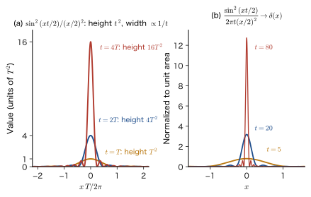
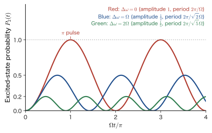
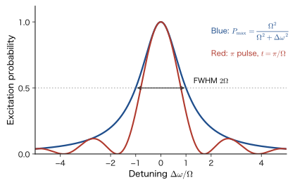
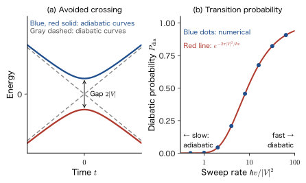

Chapter 51Time-Dependent Perturbation Theory and Fermi's Golden Rule — Transition Probabilities, Rabi Oscillations, and the Adiabatic Approximation
Ruby is red because the $3d$ electrons of $\mathrm{Cr^{3+}}$ absorb yellow-green to blue-violet light and move to an upper level (Chapter 48). There, we used Bohr's frequency condition $h\nu=\Delta E$, the statement that “absorption occurs when the photon energy equals the level spacing $\Delta E$,” as an experimental fact. How, then, does this absorption come out of the Schrödinger equation? How large is the probability that an electron moves from a lower level to an upper level? How does that probability depend on the intensity of the light and on the length of time the light is applied? What happens if the frequency of the light is detuned from the level spacing? In the previous two chapters we assembled the tools for following changes in time (the superposition of stationary states in Chapter 49, and the time-evolution operator and the interaction picture in Chapter 50), so in this chapter we finally answer these questions.
The classical counterpart is resonance. When you pump a playground swing, if you push in step with its natural frequency, the amplitude keeps growing even with a small force. If you push at a frequency that is off from the natural frequency, the amplitude does not grow; instead, it merely goes back and forth (the forced oscillation in AD 03, Chapter 7, Section 7.4). In quantum mechanics, the counterpart of the “amplitude of the swing” is the “probability of being in the upper level,” and the counterpart of the externally applied force is a small, time-varying Hamiltonian $\hat{H}_1(t)$ (the electric field of light, a pulsed magnetic field, a slowly moved wall, and so on). Of the total Hamiltonian $\hat{H}=\hat{H}_0+\hat{H}_1(t)$, suppose that the eigenstates $\ket{n}$ of $\hat{H}_0$ are already known, and write the state at time $t$ as a superposition $\sum_nc_n(t)\ket{n}$ of the $\ket{n}$. Then the external field $\hat{H}_1(t)$ “changes the coefficients $c_n(t)$ with time,” and a transfer from state to state (a transition) occurs.
The perturbation theory of Part V (Chapter 27) dealt with the problem in which a time-independent perturbation $\hat{V}$ shifts the energy levels and eigenstates slightly. The time-dependent perturbation theory of this chapter deals with the problem in which a time-dependent $\hat{H}_1(t)$ causes transfer from state to state. Instead of finding the size of the shifts, we find “the probability $P_{i\to f}(t)$ of moving from the initial state $\ket{i}$ to the final state $\ket{f}$ during the time $t$.” This is the starting point for the quantities that determine the “workings” of materials: absorption, light emission, scattering, electric current, and so on.
This chapter consists of four topics. (1) We find the transition probability to first order in the perturbation, and examine the difference between resonance, in which the probability for a constant perturbation grows in proportion to $t^2$, and nonresonance, in which it oscillates as $\sin^2$ (Section 51.1). (2) For an oscillating perturbation $\hat{H}_1(t)=\hat{V}e^{-i\omega t}+\hat{V}^\dagger e^{i\omega t}$, when the final states form a continuum of levels, the transition probability grows in proportion to time, and the “transition rate” $w=\dfrac{2\pi}{\hbar}\abs{V_{fi}}^2g(E_f)$ is determined (Fermi's golden rule). The current of a scanning tunneling microscope (STM) can be understood with this formula (Section 51.2). (3) When the final state is a single discrete level, the golden rule cannot be used, and the probability repeatedly goes back and forth (Rabi oscillation). Electron spin resonance (ESR), nuclear magnetic resonance (NMR), and the manipulation of qubits make use of this oscillation (Section 51.3). (4) We compare the limit in which the perturbation is applied slowly (the adiabatic approximation) with the limit in which it is applied suddenly (the sudden approximation, Section 49.5), and give an introduction to the Berry phase and the Landau–Zener formula, which lie beyond the adiabatic approximation (Section 51.4). The four topics are not separate theories; all of them are the same time-dependent Schrödinger equation (the simultaneous equations $i\hbar\dot{c}_m=\sum_nV_{mn}(t)\,e^{i\omega_{mn}t}c_n$ obtained by expanding in the eigenstates of $\hat{H}_0$) solved with different approximations.
- Be able to derive the simultaneous equations for the expansion coefficients $c_m(t)$ under a time-dependent perturbation, $i\hbar\dot{c}_m=\sum_nV_{mn}(t)e^{i\omega_{mn}t}c_n$, and to write down the first-order transition amplitude $c_f^{(1)}=-\dfrac{i}{\hbar}\displaystyle\int_0^tV_{fi}(t')e^{i\omega_{fi}t'}\dd t'$, the transition probability $P=\abs{c_f^{(1)}}^2$, and the second-order amplitude $c_f^{(2)}$ (a process passing through an intermediate state)
- Be able to derive the transition probability for a constant perturbation, $P=\dfrac{4\abs{V_{fi}}^2\sin^2(\omega_{fi}t/2)}{(\hbar\omega_{fi})^2}$, and to explain that at resonance ($\omega_{fi}=0$) it is proportional to $t^2$; the difference between a perturbation applied suddenly and one applied adiabatically ($e^{\eta t}$); and the fact that a perturbation of duration $t$ excites levels in an energy range of width $\sim h/t$ (the energy–time uncertainty)
- Be able to derive $\dfrac{\sin^2(xt/2)}{(x/2)^2}\to2\pi t\,\delta(x)$ and so obtain Fermi's golden rule $w=\dfrac{2\pi}{\hbar}\abs{V_{fi}}^2\delta(E_f-E_i\mp\hbar\omega)=\dfrac{2\pi}{\hbar}\abs{V_{fi}}^2g(E_f)$, and to explain its range of validity $1/\omega_{fi}\ll t\ll1/w$ and its pitfalls
- Be able to express the STM tunneling current in terms of Bardeen's transfer Hamiltonian and the golden rule, and to explain the Tersoff–Hamann result (the current is proportional to the local density of states of the sample)
- Be able to solve the two-level system $\hat{H}=\tfrac{\hbar\omega_0}{2}\sigma_z+\hbar\Omega\cos\omega t\,\sigma_x$ in the rotating-wave approximation to derive the Rabi formula $P_2=\dfrac{\Omega^2}{\Omega^2+\Delta\omega^2}\sin^2\dfrac{\sqrt{\Omega^2+\Delta\omega^2}\,t}{2}$, and to explain the $\pi$ pulse, the $\pi/2$ pulse, the Bloch sphere, Ramsey interference, and the Bloch–Siegert shift $\Omega^2/4\omega_0$
- Be able to derive the adiabatic theorem, to distinguish the dynamic phase from the Berry phase $\gamma_n=i\oint\braket{n}{\nabla_Rn}\cdot\dd\bm{R}$, and to find $\gamma=-\pi(1-\cos\theta)$ for spin 1/2. Be able to use the Landau–Zener formula $P_{\mathrm{dia}}=\exp\bigl(-2\pi\abs{V}^2/\hbar\abs{v}\bigr)$
- Earlier chapters of this book: the time-dependent Schrödinger equation and the sudden approximation (Chapter 49, especially Section 49.5), the time-evolution operator and the interaction picture (Chapter 50, especially Section 50.5), time-independent perturbation theory (Chapter 27) and the two-level system (Section 28.3), spin 1/2 and the Pauli matrices (Section 23.7; for spin in a magnetic field, Section 23.9), and tunneling (the STM in Section 12.7).
- Mathematics: the definition of the δ function (University Mathematics, Chapter 30, Section 30.3), the Fourier transform of a rectangular pulse (Section 30.2), and the matrix exponential (University Mathematics, Chapter 12, Section 12.4).
- Physics: forced oscillation and resonance (AD 03, Chapter 7, Section 7.4), two-level systems and spin (Introductory University Physics, Chapter 51, Section 51.3 (in Japanese)), and the three-dimensional density of states $g(\varepsilon)$ (Introductory University Physics, Chapter 52, Section 52.8 (in Japanese)).
- Relation to the companion volumes: Chapter 6 of Linear Response Theory (AD 08) treats the interaction picture, the Dyson series, and the adiabatic switch-on $e^{\eta t}$ (Sections 6.6 and 6.8). The first-order transition amplitude in this chapter is the entry point to that material.
51.1 Perturbation Expansion of the Transition Amplitude and the Constant Perturbation — From “Level Shifts” to “Transfer Between States”
51.1.1 What changes — how this differs from time-independent perturbation theory
In Part V, the Hamiltonian could be written as $\hat{H}=\hat{H}_0+\lambda\hat{V}$, and $\hat{V}$ did not depend on time. In that case the system is in a stationary state, and what we sought were the energy $E_n=E_n^{(0)}+E_n^{(1)}+\cdots$ slightly shifted by $\hat{V}$ and the slightly mixed eigenstate $\psi_n=\psi_n^{(0)}+\psi_n^{(1)}+\cdots$. Here we consider the case in which a small perturbation that changes with time is applied from outside.
\begin{equation} \hat{H}(t)=\hat{H}_0+\hat{H}_1(t) \label{eq:51-H} \end{equation}$\hat{H}_0$ does not depend on time, and its eigenvalues and eigenstates (an orthonormal complete set) $\hat{H}_0\ket{n}=E_n\ket{n}$ are assumed to be already known. $\hat{H}_1(t)$ is a small term due to an external field (the electric field of light, a pulse of magnetic field, a voltage applied to a sample, and so on), and it is Hermitian. We denote the matrix elements of $\hat{H}_1(t)$ by
\begin{equation} V_{mn}(t)\equiv\mel{m}{\hat{H}_1(t)}{n},\qquad V_{nm}(t)=V_{mn}(t)^*,\qquad \omega_{mn}\equiv\frac{E_m-E_n}{\hbar} \label{eq:51-Vmn} \end{equation}(here $\omega_{mn}$ is the frequency corresponding to the spacing between the two levels; $\omega_{mn}=-\omega_{nm}$). Since $\hat{H}_1(t)$ depends on time, $\hat{H}(t)$ has no stationary states. The question to ask in this situation is: “What is the probability that a system that was in the eigenstate $\ket{i}$ (initial) of $\hat{H}_0$ at time $0$ is in a different eigenstate $\ket{f}$ (final) at time $t$?” We call this the transition probability $P_{i\to f}(t)$.
| Time-independent perturbation theory (Chapter 27) | Time-dependent perturbation theory (this chapter) | |
|---|---|---|
| Perturbation | $\hat{V}$ (independent of time) | $\hat{H}_1(t)$ (changes with time) |
| State of the system | Stationary state (eigenstate) | Superposition $\sum_nc_n(t)\ket{n}$ that changes with time |
| What we seek | Energy shifts $E_n^{(1)},E_n^{(2)}$, corrections to the eigenstates | Transition probability $P_{i\to f}(t)$, transition rate $w$ |
| Counterpart in classical mechanics | The spring constant changes slightly, and the natural frequency shifts | Shaking with an external force to move the system into another vibrational mode (resonance) |
| Relevance to materials | Splitting of levels (Stark effect, Zeeman effect, ligand field) | Absorption and emission of light, STM current, magnetic resonance |
51.1.2 Simultaneous equations for the transition amplitudes
We expand the state $\ket{\Psi(t)}$ at time $t$ in the eigenstates of $\hat{H}_0$. Here, however, we take out in advance the phase factor $e^{-iE_nt/\hbar}$ that a stationary state acquires when only $\hat{H}_0$ is present:
\begin{equation} \ket{\Psi(t)}=\sum_nc_n(t)\,e^{-iE_nt/\hbar}\ket{n} \label{eq:51-expand} \end{equation}If $\hat{H}_1=0$, then $c_n$ is a constant (it corresponds to $A_n$ in the superposition of stationary states $\Psi=\sum_nA_n\psi_ne^{-iE_nt/\hbar}$ of Chapter 49). Therefore, if $c_n(t)$ changes with time, it is entirely due to $\hat{H}_1(t)$. $c_n(t)$ is the same quantity that appeared in the interaction picture of Chapter 50 as the component along the eigenstate $\ket{n}$ of $\hat{H}_0$ (Section 50.5). Here we derive directly from the Schrödinger equation the same equations that were derived from the interaction picture in Section 50.5.6 (since they are the starting point for everything that follows, we check them briefly).
Derivation: Simultaneous equations for $c_m(t)$
Substitute Eq. \eqref{eq:51-expand} into $i\hbar\,\partial_t\ket{\Psi}=(\hat{H}_0+\hat{H}_1)\ket{\Psi}$. The left-hand side is $\sum_n\bigl[i\hbar\dot{c}_n+E_nc_n\bigr]e^{-iE_nt/\hbar}\ket{n}$ (differentiating $e^{-iE_nt/\hbar}$ produces $E_nc_n$), and the $\hat{H}_0$ part of the right-hand side, $\sum_nE_nc_ne^{-iE_nt/\hbar}\ket{n}$, cancels the $E_nc_n$ term, leaving
$$ \sum_ni\hbar\dot{c}_n(t)\,e^{-iE_nt/\hbar}\ket{n}=\sum_nc_n(t)\,e^{-iE_nt/\hbar}\,\hat{H}_1(t)\ket{n} $$Multiplying from the left by $\bra{m}$ (using $\braket{m}{n}=\delta_{mn}$), then multiplying both sides by $e^{iE_mt/\hbar}$ and combining the exponentials as $e^{i(E_m-E_n)t/\hbar}=e^{i\omega_{mn}t}$, we obtain the following equation.
∎
Formula 51.1: Simultaneous equations for the transition amplitudes (exact)
\begin{equation} i\hbar\,\dot{c}_m(t)=\sum_nV_{mn}(t)\,e^{i\omega_{mn}t}\,c_n(t) \label{eq:51-cm} \end{equation}The initial condition, for a system that is in the state $\ket{i}$ at time $0$, is $c_n(0)=\delta_{ni}$. The probability of finding the system in the state $\ket{f}$ at time $t$, that is, the transition probability, is $P_{i\to f}(t)=\abs{\braket{f}{\Psi(t)}}^2=\abs{c_f(t)}^2$ (the absolute value of the phase factor $e^{-iE_ft/\hbar}$ is 1).
Eq. \eqref{eq:51-cm} contains no approximation. It holds whatever the size and form of $\hat{H}_1(t)$; it is the Schrödinger equation itself. It is a system of first-order differential equations for $c_m$, with the structure that “the strength of the transfer from $n$ to $m$” is the matrix element $V_{mn}(t)$ of the perturbation, and that this transfer is accompanied by the phase factor $e^{i\omega_{mn}t}$, which rotates at the frequency $\omega_{mn}$ of the level spacing. Conservation of probability, $\sum_m\abs{c_m}^2=1$, can also be verified from Eq. \eqref{eq:51-cm} and its complex conjugate:
\begin{equation} \frac{\dd}{\dd t}\sum_m\abs{c_m}^2=\sum_m\bigl(\dot{c}_m^*c_m+c_m^*\dot{c}_m\bigr)=\frac{1}{i\hbar}\sum_{m,n}\Bigl[c_m^*V_{mn}e^{i\omega_{mn}t}c_n-c_n^*V_{nm}e^{i\omega_{nm}t}c_m\Bigr]=0 \label{eq:51-norm} \end{equation}(if we interchange the names $m$ and $n$ in the second term, it cancels the first term because $V_{mn}^*=V_{nm}$ and $e^{-i\omega_{mn}t}=e^{i\omega_{nm}t}$).
51.1.3 Perturbation expansion: zeroth, first, and second order
Solving Eq. \eqref{eq:51-cm} exactly is in general difficult. So, regarding $\hat{H}_1$ as small, we put $\hat{H}_1\to\lambda\hat{H}_1$ and carry out the same expansion in $\lambda$ as in Part V: $c_m=c_m^{(0)}+\lambda c_m^{(1)}+\lambda^2c_m^{(2)}+\cdots$. Comparing the coefficients of $\lambda^{k+1}$ on both sides of Eq. \eqref{eq:51-cm}, and noting that $V_{mn}$ on the right-hand side carries a factor $\lambda$, we obtain the following recurrence relation:
\begin{equation} i\hbar\,\dot{c}_m^{(k+1)}(t)=\sum_nV_{mn}(t)\,e^{i\omega_{mn}t}\,c_n^{(k)}(t),\qquad c_n^{(0)}=\delta_{ni},\quad c_n^{(k\ge1)}(0)=0 \label{eq:51-order} \end{equation}(the initial condition $c_n(0)=\delta_{ni}$ has been assigned to order $0$). All we have to do is substitute the solution of order $k$ into the right-hand side of the equation of order $(k+1)$ and integrate.
- Zeroth order: $c_n^{(0)}=\delta_{ni}$. If there is no perturbation, the system stays in $\ket{i}$.
- First order: Only the $n=i$ term survives, so $i\hbar\,\dot{c}_f^{(1)}=V_{fi}(t)\,e^{i\omega_{fi}t}$. Integrating from time $0$ to $t$ (with $c_f^{(1)}(0)=0$),
$P_{i\to f}(t)$ is “the square of the absolute value of the first-order transition amplitude.” The transition amplitude is the time integral of the matrix element $V_{fi}(t')$ of the perturbation multiplied by the phase $e^{i\omega_{fi}t'}$, which rotates at the level spacing. A large amplitude is obtained when the integrand rotates in the same direction over the whole time (when the phases do not cancel). This is the meaning of “resonance,” which we examine in detail below. Incidentally, this treatment, in which the response to a weak external field is obtained from the first-order transition amplitude alone, is also the starting point of linear response theory (the Kubo formula) (Chapter 54).
- Second order: Set $k=1$ in Eq. \eqref{eq:51-order} and substitute $c_n^{(1)}(t'')$ (Eq. \eqref{eq:51-c1} with $f\to n$). Integrating with $c_f^{(2)}(0)=0$,
This expression is the amplitude of the two-step process “at time $t''$ the system moves from $\ket{i}\to\ket{n}$ through the perturbation, and then at a later time $t'\ (\gt t'')$ it moves once more through the perturbation from $\ket{n}\to\ket{f}$,” summed over all intermediate states $\ket{n}$ and over all pairs of times $t''\lt t'$. The time ordering $t''\lt t'$ appears in the integration range $0\le t''\le t'\le t$ (it is the second-order term of the Dyson series derived in Chapter 50, Section 50.5). The intermediate state $\ket{n}$ is a virtual state that need not satisfy energy conservation, and only $\ket{f}$ is finally observed. A second-order process causes transitions that do not occur at first order (for example, when a direct transition from $\ket{i}$ to $\ket{f}$ is forbidden, $V_{fi}=0$). Two-photon absorption, in which two photons are absorbed simultaneously, and Raman scattering, in which a molecule that has absorbed light emits light of a different energy, are second-order processes (Exercise 51.2).
Caution: Conditions under which the first-order result is reliable
The first-order transition probability, Eq. \eqref{eq:51-c1}, is an approximation that keeps the perturbation only up to first order. The condition is $P_{i\to f}\ll1$; more precisely, the sum of the probabilities over all final states must satisfy $\sum_{f\ne i}P_{i\to f}(t)\ll1$, that is, the probability $\abs{c_i}^2\simeq1$ of the initial state $\ket{i}$ must have hardly decreased. In the first-order calculation, $P_{i\to f}$ is computed while the probability of the initial state is kept at $\abs{c_i}^2=1$. Therefore, if a result appears in which $P$ approaches $1$, or in which the total of the probabilities exceeds $1$, it lies beyond the range of first-order perturbation (to satisfy conservation of probability, Eq. \eqref{eq:51-norm}, the decrease of $\abs{c_i}^2$ must be incorporated as a second-order quantity). For a transition between two discrete levels, if the perturbation lasts long enough, $P$ reaches $1$ and the probability goes back and forth. This is the Rabi oscillation of Section 51.3.
51.1.4 Constant perturbation — transitions after the switch is turned on
In the simplest case, suppose that the perturbation is suddenly switched on at time $t=0$ and is thereafter a constant $\hat{V}$, independent of time: $\hat{H}_1(t)=\hat{V}$ ($t\ge0$). Since the matrix element $V_{fi}$ is a constant, the integral in Eq. \eqref{eq:51-c1} is the integral of an exponential function:
\begin{equation} c_f^{(1)}(t)=-\frac{i}{\hbar}V_{fi}\int_0^te^{i\omega_{fi}t'}\dd t'=-\frac{i}{\hbar}V_{fi}\,\frac{e^{i\omega_{fi}t}-1}{i\omega_{fi}}=-\frac{V_{fi}}{\hbar\omega_{fi}}\bigl(e^{i\omega_{fi}t}-1\bigr) \label{eq:51-cconst} \end{equation}We take the square of the absolute value. Using $\abs{e^{i\theta}-1}^2=(e^{i\theta}-1)(e^{-i\theta}-1)=2-2\cos\theta=4\sin^2(\theta/2)$ with $\theta=\omega_{fi}t$, we obtain
This is the transition probability for a constant perturbation. We read the meaning of this equation by dividing it into two cases (Figure 51.1).
- $\omega_{fi}\ne0$ (when the levels are far apart): $P$ oscillates, with period $2\pi/\omega_{fi}=h/(E_f-E_i)$, between $0$ and the maximum value $\dfrac{4\abs{V_{fi}}^2}{(\hbar\omega_{fi})^2}$. If $\abs{V_{fi}}\ll\hbar\abs{\omega_{fi}}$, the maximum value is small. When the levels are far apart, the probability of leaking out to the final state through the perturbation is small, and it does not last long; it quickly returns to its original value.
- $\omega_{fi}\to0$ (when the levels are nearly degenerate): Using $\sin x\approx x$, we get $P\to\dfrac{4\abs{V_{fi}}^2}{(\hbar\omega_{fi})^2}\Bigl(\dfrac{\omega_{fi}t}{2}\Bigr)^2=\dfrac{\abs{V_{fi}}^2t^2}{\hbar^2}$. The probability keeps increasing in proportion to the square of the time. This is because the phase $e^{i\omega_{fi}t'}$ does not rotate, so the amplitudes keep adding up in the same direction. This is the limit of resonance.
![Graph showing the time dependence of the transition probability for a constant perturbation. The horizontal axis is time made dimensionless by the size of the perturbation, and the vertical axis is the transition probability. At resonance, where the level spacing is zero, the probability increases parabolically; when the level spacing is 4 times or 8 times the perturbation, it is a sin-squared oscillation whose maximum value is 1/4 and 1/16, respectively. For the case of 4 times the level spacing, the exact solution of the two-level system is overlaid as a dashed line.](figs/ch51_fig51-1.svg)
Intuition: Correspondence with the “mixing of states” in Part V
When the levels are far apart, Eq. \eqref{eq:51-cconst} can be split into two terms: $c_f^{(1)}=-\dfrac{V_{fi}}{\hbar\omega_{fi}}e^{i\omega_{fi}t}+\dfrac{V_{fi}}{\hbar\omega_{fi}}$. The magnitude of the first term, $\dfrac{\abs{V_{fi}}}{\hbar\abs{\omega_{fi}}}$, is the same as the magnitude of the coefficient $\dfrac{V_{fi}}{E_i-E_f}=-\dfrac{V_{fi}}{\hbar\omega_{fi}}$ in the first-order correction to the eigenstate in time-independent perturbation theory (Section 27.3), $\psi_i^{(1)}=\sum_f\dfrac{V_{fi}}{E_i-E_f}\ket{f}$. When the perturbation is applied, the system ought to “become” an eigenstate of the perturbed system (a state in which a little $\ket{f}$ is mixed into $\ket{i}$). That part is the first term. However, if the switch is turned on suddenly, the state is still $\ket{i}$ at the instant of switching (we need $c_f(0)=0$) and has not become the new eigenstate. The time-independent second term cancels this mismatch. As a result, $\abs{c_f}^2$ oscillates between $0$ and a maximum of $4\abs{V_{fi}/\hbar\omega_{fi}}^2$, and its time average is $2\abs{V_{fi}/\hbar\omega_{fi}}^2$. Compared with the magnitude of the mixing, $\abs{V_{fi}/\hbar\omega_{fi}}^2$, this is twice as large on a time average and four times as large at the maximum. The extra excitation caused by switching on too quickly disappears in the adiabatic way of switching on that we see in the next section.
Example 51.1: Constant perturbation switched on suddenly — two-level system with $\Delta E=0.1\ \mathrm{eV}$
A two-level system with energy difference $E_f-E_i=\Delta E=0.10\ \mathrm{eV}$ is suddenly subjected, at time $0$, to a constant perturbation with matrix element $\abs{V_{fi}}=1.0\ \mathrm{meV}$. (1) Find the maximum value of $P_{i\to f}$. (2) Find the period of the oscillation of $P_{i\to f}(t)$. (3) By how much does this first-order perturbation result differ, in its maximum value, from the exact solution of the two-level system, $P=\dfrac{4\abs{V_{fi}}^2}{\Delta E^2+4\abs{V_{fi}}^2}\sin^2\dfrac{\sqrt{\Delta E^2+4\abs{V_{fi}}^2}\,t}{2\hbar}$?
Solution. (1) Setting $\sin^2$ in Eq. \eqref{eq:51-Pconst} equal to $1$, we obtain $P_{\max}=\dfrac{4\abs{V_{fi}}^2}{\Delta E^2}=\dfrac{4\times(1.0\times10^{-3}\ \mathrm{eV})^2}{(0.10\ \mathrm{eV})^2}=\dfrac{4\times10^{-6}}{10^{-2}}=4.0\times10^{-4}$. Since $P\ll1$, first-order perturbation theory is justified.
(2) The period of $\sin^2(\omega_{fi}t/2)$ is $2\pi/\omega_{fi}$. Since $\omega_{fi}=\Delta E/\hbar$, the period is $\dfrac{2\pi\hbar}{\Delta E}=\dfrac{h}{\Delta E}=\dfrac{4.1357\times10^{-15}\ \mathrm{eV\,s}}{0.10\ \mathrm{eV}}=4.14\times10^{-14}\ \mathrm{s}=41\ \mathrm{fs}$ (with $h=4.1357\times10^{-15}\ \mathrm{eV\,s}$).
(3) The maximum value of the exact solution is $\dfrac{4\abs{V_{fi}}^2}{\Delta E^2+4\abs{V_{fi}}^2}=\dfrac{4\times10^{-6}}{10^{-2}+4\times10^{-6}}=3.9984\times10^{-4}$, and its relative difference from the first-order perturbation value $4.0000\times10^{-4}$ is $4\times10^{-4}$. The frequency of the exact solution is also $\sqrt{\Delta E^2+4\abs{V_{fi}}^2}/\hbar$, which is larger than $\Delta E/\hbar$ by only $2\times10^{-4}$. Since $\abs{V_{fi}}/\Delta E=0.01$ is small, first-order perturbation theory is accurate enough. The difference of about 20% between the dashed and solid lines in Figure 51.1 at $\hbar\omega_{fi}=4\abs{V_{fi}}$ arises because $\abs{V_{fi}}/\Delta E=\frac14$ is large. Incidentally, this exact solution is the Rabi formula, Eq. \eqref{eq:51-rabi}, of Section 51.3.3, with the coupling $\hbar\Omega/2$ read as $\abs{V_{fi}}$ and the detuning $\Delta\omega$ read as $\Delta E/\hbar$ ($\hbar\Omega_{\mathrm R}=\sqrt{\Delta E^2+4\abs{V_{fi}}^2}$). Let us check this after reading Section 51.3.
51.1.5 Adiabatic switch-on $e^{\eta t}$
What happens if we switch the perturbation on not suddenly but very slowly? To express this, we multiply the perturbation by a factor $e^{\eta t}$ ($\eta\gt0$ is a small constant) and apply it from the infinite past, $t_0\to-\infty$:
\begin{equation} \hat{H}_1(t)=e^{\eta t}\hat{V}\qquad(-\infty\lt t\lt\infty,\ \eta\to+0) \label{eq:51-adiabatic} \end{equation}As $t\to-\infty$ we have $e^{\eta t}\to0$, so no perturbation is present, and we may regard the system as being in the eigenstate $\ket{i}$ of $\hat{H}_0$. At $t=0$ the magnitude of the perturbation becomes exactly $\hat{V}$, and the limit $\eta\to0$ means that “the perturbation is applied infinitely slowly” (the time scale over which the magnitude of the perturbation changes is $1/\eta$). This is called adiabatic switch-on. The companion volume on linear response theory (AD 08) also uses this factor $\eta\to+0$ (AD 08, Chapter 6, Section 6.8). We compute with the lower limit of the integral in Eq. \eqref{eq:51-c1} set to $-\infty$ and the matrix element of $\hat{V}$ set to the constant $V_{fi}$:
\begin{equation} c_f^{(1)}(t)=-\frac{i}{\hbar}V_{fi}\int_{-\infty}^te^{(\eta+i\omega_{fi})t'}\dd t'=-\frac{i}{\hbar}V_{fi}\,\frac{e^{(\eta+i\omega_{fi})t}}{\eta+i\omega_{fi}}=-\frac{V_{fi}}{\hbar}\,\frac{e^{i(\omega_{fi}-i\eta)t}}{\omega_{fi}-i\eta} \label{eq:51-cad} \end{equation}Note that, thanks to $\eta\gt0$, the integral converges because $e^{(\eta+i\omega_{fi})t'}\to0$ at the lower limit $t'\to-\infty$, and that in the last equality we used $\dfrac{-i}{\eta+i\omega}=\dfrac{-i}{i(\omega-i\eta)}=\dfrac{-1}{\omega-i\eta}$ and rewrote the exponent as $e^{(\eta+i\omega)t}=e^{i(\omega-i\eta)t}$. When $\eta\to+0$, the denominator becomes $\omega_{fi}-i\eta\to\omega_{fi}$, so that
$$ c_f^{(1)}(t)\longrightarrow-\frac{V_{fi}}{\hbar\omega_{fi}}\,e^{i\omega_{fi}t}=\frac{V_{fi}}{E_i-E_f}\,e^{i\omega_{fi}t}\qquad(\omega_{fi}\ne0) $$This is exactly the first term we saw in the Intuition box of the previous section, and its absolute value is independent of time. It expresses the fact that, even after the perturbation has been applied, the system slowly follows the state in which a little of $\ket{f}$ is mixed into $\ket{i}$, that is, the first-order eigenstate $\ket{i}+\sum_f\dfrac{V_{fi}}{E_i-E_f}\ket{f}$ of Part V. The extra term $+V_{fi}/(\hbar\omega_{fi})$ that appeared when the perturbation was switched on suddenly does not arise when it is switched on adiabatically. The form of the denominator, $\omega_{fi}-i\eta$, is of the same kind as the $\omega+i\eta$ that appears in the response functions of linear response theory and in the retarded Green's function (Chapter 55). Also, near $\omega_{fi}=0$ (levels close to degeneracy), $\abs{c_f^{(1)}}$ becomes large and first-order perturbation theory breaks down. This is the situation in which the degenerate perturbation theory we saw in Chapter 28 is needed.
Example 51.2: The difference in excitation between adiabatic and sudden application
A constant perturbation $\hat{V}$ is applied to a two-level system with $\hbar\omega_{fi}=E_f-E_i=0.10\ \mathrm{eV}$ and $\abs{V_{fi}}=1.0\ \mathrm{meV}$. (1) If it is applied adiabatically, what is the probability $\abs{c_f}^2$ of the final state $\ket{f}$? (2) If it is applied suddenly, find the maximum value and the time average of $P_{i\to f}(t)$, and compare them with (1). (3) For adiabatic application, what does $\eta\to+0$ mean concretely? Compared with which quantity must $\eta$ be small?
Solution. (1) Setting $\eta\to+0$ in Eq. \eqref{eq:51-cad} gives $\abs{c_f}^2=\dfrac{\abs{V_{fi}}^2}{(\hbar\omega_{fi})^2}=\left(\dfrac{1.0\times10^{-3}}{0.10}\right)^2=1.0\times10^{-4}$. This is the probability of $\ket{f}$ contained in the perturbed eigenstate, and it is independent of time.
(2) For sudden application, the maximum value is the $4.0\times10^{-4}$ of Example 51.1, and the time average, using the average $\frac12$ of $\sin^2$, is $\dfrac{4\abs{V_{fi}}^2}{(\hbar\omega_{fi})^2}\times\dfrac12=2.0\times10^{-4}$. Compared with the $1.0\times10^{-4}$ of (1), the maximum value is four times as large and the time average is twice as large. By switching on suddenly, the system is excited by an extra amount corresponding to the “mismatch” with the perturbed eigenstate.
(3) In the denominator $\omega_{fi}-i\eta$ of Eq. \eqref{eq:51-cad}, if $\eta$ is small compared with $\omega_{fi}$, then $\eta$ can be neglected. That is, the condition is $\eta\ll\abs{\omega_{fi}}$: the time scale $1/\eta$ over which the magnitude of the perturbation changes must be sufficiently longer than the quantum-mechanical time $1/\abs{\omega_{fi}}$. In this example $1/\abs{\omega_{fi}}=\hbar/(0.10\ \mathrm{eV})=6.6\ \mathrm{fs}$, so if the perturbation is switched on slowly over several ps or more, it may be regarded as adiabatic.
51.1.6 Time width and energy width
The constant-perturbation formula, Eq. \eqref{eq:51-Pconst}, hides an important property that is characteristic of quantum mechanics. When the perturbation is applied only for a duration $t$, the transition probability is proportional to $\sin^2(\omega_{fi}t/2)/(\omega_{fi}/2)^2$. This function takes its maximum value ($t^2$) at $\omega_{fi}=0$ and first becomes $0$ at $\omega_{fi}=\pm2\pi/t$ (Figure 51.2, next section). That is, the only levels that a perturbation applied for a time $t$ can excite significantly are those for which the deviation from the frequency of the external field (here $0$) is $\abs{\omega_{fi}}\lesssim2\pi/t$, or, in terms of energy, those satisfying
\begin{equation} \abs{E_f-E_i}\lesssim\frac{2\pi\hbar}{t}=\frac{h}{t} \label{eq:51-width} \end{equation}If the perturbation is applied for only a short time, levels in a wide range of energies are excited all at once. If it is applied for a long time, only the levels whose energies match well are excited. This is the expression, in terms of transition probabilities, of the time–energy uncertainty relation $\Delta E\cdot\Delta t\gtrsim\hbar$ of Chapter 8 (Chapter 8; the Mandelstam–Tamm relation of Chapter 50, Section 50.4). This relation is also the same as the fact, familiar from the Fourier transform, that “a short light pulse contains a wide range of colors (energies) and therefore excites a wide range of levels” (the Fourier transform of a rectangular pulse, AD 02, Chapter 30, Section 30.2).
Example 51.3: The energy width that a short pulse can excite
Using $h/t$, estimate the range of energies that can be excited from the ground state by a rectangular pulse of duration $t=100\ \mathrm{fs}$. Also, how long must the pulse be in order to select and excite just one level out of a group of levels spaced $25\ \mathrm{meV}$ apart? Discuss also the case in which the estimate is made with the full width at half maximum, $0.886\,h/t$.
Solution. With $h=4.1357\times10^{-15}\ \mathrm{eV\,s}$, $\dfrac{h}{t}=\dfrac{4.1357\times10^{-15}\ \mathrm{eV\,s}}{100\times10^{-15}\ \mathrm{s}}=4.14\times10^{-2}\ \mathrm{eV}=41\ \mathrm{meV}$. Levels within $\pm41\ \mathrm{meV}$ of the resonance energy (from one zero of the main peak to the other) are excited. The full width at half maximum of the main peak is determined as follows. $P\propto\sin^2u/u^2$ ($u=\omega_{fi}t/2$) falls to half of its maximum value, as found by solving numerically, at $u=\pm1.3916$, that is, at $\omega_{fi}=\pm2.7832/t$. The full width is $2\times2.7832/t$, which in terms of energy is $\dfrac{2\hbar\times2.7832}{t}=0.886\,\dfrac{h}{t}=36.6\ \mathrm{meV}$ (we used $2\times2.7832/(2\pi)=0.886$).
To separate and excite the levels of a group with 25 meV spacing one by one, the width of the main peak must be made smaller than the spacing. Setting $h/t\lesssim25\ \mathrm{meV}$ gives $t\gtrsim\dfrac{4.1357\times10^{-15}\ \mathrm{eV\,s}}{25\times10^{-3}\ \mathrm{eV}}=1.65\times10^{-13}\ \mathrm{s}=165\ \mathrm{fs}$. Evaluating with the full width at half maximum $0.886\,h/t$, from $0.886\,h/t\lesssim25\ \mathrm{meV}$ we obtain $t\gtrsim\dfrac{0.886\times4.1357\times10^{-15}\ \mathrm{eV\,s}}{25\times10^{-3}\ \mathrm{eV}}=1.47\times10^{-13}\ \mathrm{s}=147\ \mathrm{fs}$, so that about 10% less time suffices than the 165 fs obtained with the width to the zeros, $h/t$. If the pulse stays at 100 fs, neighboring levels are excited simultaneously. Conversely, for a $10\ \mathrm{fs}$ pulse, $h/t=414\ \mathrm{meV}$, and a range far wider than, for example, the level spacing of the optical phonon of Si (about $64\ \mathrm{meV}$, period about $64\ \mathrm{fs}$) is excited at once, producing a superposition of several vibrational levels (a coherent phonon). The superposition excited in this way oscillates, as a quantum beat (Chapter 49), with a period corresponding to the level spacing.
51.2 Harmonic Perturbations and Fermi's Golden Rule — Transition Rates into a Continuum of Levels
51.2.1 Harmonic perturbations and the resonance condition — absorption and stimulated emission
Consider an external field that oscillates at angular frequency $\omega$, such as light or a high-frequency electromagnetic field. Since the external field is a real physical quantity, $\hat{H}_1(t)$ contains both $e^{-i\omega t}$ and $e^{+i\omega t}$. We therefore write a harmonic perturbation that is switched on at time $t=0$ in the following form:
\begin{equation} \hat{H}_1(t)=\hat{V}\,e^{-i\omega t}+\hat{V}^\dagger e^{i\omega t}\qquad(t\ge0,\ \omega\gt0) \label{eq:51-harm} \end{equation}The two terms on the right-hand side are Hermitian conjugates of each other, and $\hat{H}_1$ is Hermitian. For example, the interaction $-\hat{\bm{d}}\cdot\bm{E}_0\cos\omega t$ that an electric field $\bm{E}_0\cos\omega t$ exerts on an electric dipole $\hat{\bm{d}}$ corresponds, through $\cos\omega t=\tfrac12(e^{i\omega t}+e^{-i\omega t})$, to $\hat{V}=-\tfrac12\hat{\bm{d}}\cdot\bm{E}_0$ (Chapter 52). $\hat{V}$ itself need not be Hermitian (for example, an operator that absorbs a photon), so we wrote the conjugate $\hat{V}^\dagger$ explicitly. The matrix element is $V_{fi}(t)=V_{fi}\,e^{-i\omega t}+(V^\dagger)_{fi}\,e^{i\omega t}$, where $(V^\dagger)_{fi}=V_{if}^*$.
Substituting into Eq. \eqref{eq:51-c1} and integrating the two exponential functions separately, we obtain the result of the constant-perturbation calculation \eqref{eq:51-cconst} with $\omega_{fi}$ replaced by $\omega_{fi}-\omega$ and by $\omega_{fi}+\omega$:
\begin{equation} c_f^{(1)}(t)=-\frac{1}{\hbar}\left[V_{fi}\,\frac{e^{i(\omega_{fi}-\omega)t}-1}{\omega_{fi}-\omega}+(V^\dagger)_{fi}\,\frac{e^{i(\omega_{fi}+\omega)t}-1}{\omega_{fi}+\omega}\right] \label{eq:51-charm} \end{equation}(We used $-\dfrac{i}{\hbar}\displaystyle\int_0^te^{i\Delta t'}\dd t'=-\dfrac{i}{\hbar}\dfrac{e^{i\Delta t}-1}{i\Delta}=-\dfrac{1}{\hbar}\dfrac{e^{i\Delta t}-1}{\Delta}$ with $\Delta=\omega_{fi}\mp\omega$.) The first term becomes large, because its denominator approaches $0$, when $\omega_{fi}\approx\omega$, that is, $E_f-E_i\approx\hbar\omega$, and the second term becomes large when $\omega_{fi}\approx-\omega$, that is, $E_f-E_i\approx-\hbar\omega$. This is the resonance condition.
- Absorption: $E_f=E_i+\hbar\omega$. The system receives energy $\hbar\omega$ from the external field and moves to an upper level. The first term applies.
- Stimulated emission: $E_f=E_i-\hbar\omega$. The system gives energy $\hbar\omega$ to the external field and moves to a lower level. The second term applies.
Since $\omega\gt0$, for a given pair $(i,f)$ only one of the two terms can be at resonance. The term that is not at resonance has a large denominator, of order $\omega_{fi}\pm\omega\approx\pm2\omega$ or $\pm\omega_{fi}$, and since $\abs{e^{i\theta}-1}\le2$, its magnitude does not exceed $\abs{V}/(\hbar\omega)$ and it does not grow with time either. Keeping only the term at resonance, the transition probability for absorption, using $\abs{e^{i\Delta t}-1}^2=4\sin^2(\Delta t/2)$, becomes the following:
\begin{equation} P_{i\to f}(t)=\frac{\abs{V_{fi}}^2}{\hbar^2}\,\frac{\sin^2\bigl[(\omega_{fi}-\omega)t/2\bigr]}{\bigl[(\omega_{fi}-\omega)/2\bigr]^2}\qquad(\omega_{fi}\approx\omega) \label{eq:51-Pharm} \end{equation}For stimulated emission, it suffices to replace $V_{fi}\to(V^\dagger)_{fi}$ and $\omega_{fi}-\omega\to\omega_{fi}+\omega$. Below, we write out the case of absorption. Since $4\sin^2(\omega_{fi}t/2)/\omega_{fi}^2=F_t(\omega_{fi})$, the constant-perturbation formula \eqref{eq:51-Pconst} can also be written as $P=\abs{V_{fi}}^2F_t(\omega_{fi})/\hbar^2$, which has the same form as Eq. \eqref{eq:51-Pharm} with $\omega=0$. Viewed as a function of the detuning $x\equiv\omega_{fi}-\omega$, the form of the transition probability is determined by the following function $F_t(x)$.
51.2.2 The function $\sin^2(xt/2)/(x/2)^2$ — becoming a $\delta$ function as $t\to\infty$
Definition 51.1: Resonance curve $F_t(x)$
\begin{equation} F_t(x)\equiv\frac{\sin^2(xt/2)}{(x/2)^2}=t^2\left[\frac{\sin(xt/2)}{xt/2}\right]^2 \label{eq:51-Ft} \end{equation}The transition probability \eqref{eq:51-Pharm} can be written as $P=\dfrac{\abs{V_{fi}}^2}{\hbar^2}F_t(\omega_{fi}-\omega)$. Let us examine the shape of $F_t(x)$ (Figure 51.2).
- Height: As $x\to0$, $\sin(xt/2)/(xt/2)\to1$, so $F_t(0)=t^2$. The height grows in proportion to the square of the time.
- Width: The first $x$ at which $\sin(xt/2)=0$ is given by $xt/2=\pi$, that is, $x=\pm2\pi/t$. The width of the main peak narrows in inverse proportion to $t$.
- Area: Letting $u=xt/2$, we have $\dd x=\dfrac{2}{t}\dd u$ and $F_t=t^2\dfrac{\sin^2u}{u^2}$, so $\displaystyle\int_{-\infty}^{\infty}F_t(x)\dd x=2t\int_{-\infty}^{\infty}\frac{\sin^2u}{u^2}\dd u$. Integrating the last integral by parts (using $\dfrac{\dd}{\dd u}\bigl(-\tfrac1u\bigr)=\tfrac1{u^2}$) gives $$ \int_{-\infty}^{\infty}\frac{\sin^2u}{u^2}\dd u=\Bigl[-\frac{\sin^2u}{u}\Bigr]_{-\infty}^{\infty}+\int_{-\infty}^{\infty}\frac{2\sin u\cos u}{u}\dd u=\int_{-\infty}^{\infty}\frac{\sin2u}{u}\dd u=\pi $$ (the boundary term is $0$, and the last step is the Dirichlet integral $\displaystyle\int_{-\infty}^\infty\frac{\sin au}{u}\dd u=\pi$ ($a\gt0$), which reduces to $\int\sin v/v\,\dd v=\pi$ if we set $2u=v$). Hence the area is $2\pi t$, which increases in proportion to $t$.

To summarize, $F_t(x)/(2\pi t)$ is a function whose area is always $1$ and which becomes narrower and taller the larger $t$ is. As $t\to\infty$, it is almost $0$ except at $x=0$, with an area of $1$ concentrated near $x=0$; that is, it becomes the Dirac $\delta$ function (see the next box):
Math Tool: The $\delta$ function
The Dirac $\delta$ function $\delta(x)$ is $0$ for $x\ne0$, has total integral $1$, and satisfies $\displaystyle\int_{-\infty}^\infty\delta(x)\,g(x)\dd x=g(0)$ for any smooth function $g(x)$ (University Mathematics, Chapter 30, Section 30.3). It is not a function in the ordinary sense; it is enough to think of it as “the limit of a sequence of functions whose width is shrunk to $0$ while the area is kept at $1$.” The meaning of Eq. \eqref{eq:51-delta} is this: for any smooth $g(x)$, if $g$ hardly changes over the width $2\pi/t$, then $\int F_t(x)\,g(x)\dd x\approx g(0)\int F_t\dd x=2\pi t\,g(0)$. A useful property of the $\delta$ function is $\delta(ax)=\delta(x)/\abs{a}$. Applying this to $x=\omega_{fi}-\omega=(E_f-E_i-\hbar\omega)/\hbar$ gives
$$ \delta(\omega_{fi}-\omega)=\hbar\,\delta(E_f-E_i-\hbar\omega) $$The $\delta$ function of the energy $E$ and the $\delta$ function of the angular frequency differ only by a factor of $\hbar$. Another way to represent the $\delta$ function is as the $\eta\to+0$ limit of the Lorentzian function $\dfrac{1}{\pi}\dfrac{\eta}{x^2+\eta^2}$ of width $\eta$ (used later in a different derivation). This is related to the real and imaginary parts of the Sokhotski–Plemelj formula near the poles $x=\pm i\eta$ in the complex plane, $\dfrac{1}{x\mp i\eta}=\mathrm{P}\dfrac{1}{x}\pm i\pi\delta(x)$ ($\mathrm{P}$ is the Cauchy principal value) (AD 08, Chapter 5, Section 5.11).
51.2.3 Fermi's golden rule
Let us substitute Eq. \eqref{eq:51-delta} into Eq. \eqref{eq:51-Pharm}. For sufficiently large $t$, we obtain
\begin{equation} P_{i\to f}(t)\simeq\frac{\abs{V_{fi}}^2}{\hbar^2}\,2\pi t\,\delta(\omega_{fi}-\omega)=\frac{2\pi t}{\hbar}\abs{V_{fi}}^2\,\delta(E_f-E_i-\hbar\omega) \label{eq:51-Plin} \end{equation}For final states that satisfy the resonance condition $E_f=E_i+\hbar\omega$, the transition probability increases in proportion to the time $t$. Therefore the transition probability per unit time, $w=P/t$, that is, the transition rate, is well defined:
\begin{equation} w_{i\to f}=\frac{2\pi}{\hbar}\abs{V_{fi}}^2\,\delta(E_f-E_i-\hbar\omega) \label{eq:51-golden0} \end{equation}However, this expression loses its meaning when the final state is a single discrete level. This is because, if the discrete level $E_f$ is not exactly $E_i+\hbar\omega$, then $w=0$, and if it is exactly equal, then $w=\infty$. The $\delta$ function gives a finite value only when the final states are arranged continuously and the sum over states (the integral) is taken. Let us consider the case in which the final states form a continuum of levels or a collection of very densely spaced levels. We write the number of states per unit energy width as the density of states $g(E)$ (the same quantity as $g(\varepsilon)$ in AD 03, Chapter 52, Section 52.8 (in Japanese)): $g(E)\dd E$ is the number of states whose energy lies between $E$ and $E+\dd E$. The energy of the state $\ket{f}$ is $E_f$, and the sum over states $\sum_f$ becomes the integral over energy, $\int g(E_f)\dd E_f$. The total transition probability is
$$ P_{\mathrm{tot}}(t)=\sum_fP_{i\to f}(t)=\int\dd E_f\;g(E_f)\,\frac{\abs{V_{fi}}^2}{\hbar^2}\,F_t\!\Bigl(\frac{E_f-E_i}{\hbar}-\omega\Bigr) $$Here, if $F_t$ takes values only within an energy range of width $\hbar\cdot2\pi/t$, and $\abs{V_{fi}}^2g(E_f)$ can be regarded as hardly changing over that range, then, using $\int F_t\dd E_f=\hbar\cdot2\pi t$, we can replace $\abs{V_{fi}}^2g(E_f)$ by its value at $E_f=E_i+\hbar\omega$. Therefore $P_{\mathrm{tot}}=\dfrac{2\pi t}{\hbar}\abs{V_{fi}}^2g(E_f)\Big|_{E_f=E_i+\hbar\omega}$, and dividing this by $t$ gives the transition rate.
Law 51.1: Fermi's golden rule
The transition rate (per unit time) from the initial state $\ket{i}$ to the final state $\ket{f}$ due to the periodic perturbation $\hat{H}_1(t)=\hat{V}e^{-i\omega t}+\hat{V}^\dagger e^{i\omega t}$ is $w_{i\to f}=\dfrac{2\pi}{\hbar}\abs{V_{fi}}^2\delta(E_f-E_i\mp\hbar\omega)$ (the sign is $-$ for absorption and $+$ for stimulated emission; for stimulated emission, $V_{fi}$ is replaced by $(V^\dagger)_{fi}$). When the final states form a continuum of levels, summing over the states $\ket{f}$ gives
\begin{equation} w=\frac{2\pi}{\hbar}\sum_f\abs{V_{fi}}^2\,\delta(E_f-E_i\mp\hbar\omega)=\frac{2\pi}{\hbar}\,\abs{V_{fi}}^2\,g(E_f)\Big|_{E_f=E_i\pm\hbar\omega} \label{eq:51-golden} \end{equation}Here $E_f=E_i+\hbar\omega$ for absorption and $E_f=E_i-\hbar\omega$ for stimulated emission. $g(E_f)$ is the density of states of the final states, and it includes the degeneracy due to spin and the like. When $\abs{V_{fi}}^2$ differs among the several states $\ket{f}$ that have the energy $E_f$, take their average $\overline{\abs{V_{fi}}^2}$.
Let us check the dimensions. $\abs{V_{fi}}^2$ is $[\mathrm{J}^2]$, $g(E_f)$ is $[\mathrm{J}^{-1}]$, and $\hbar$ is $[\mathrm{J\,s}]$, so the unit of $w$ is $\mathrm{J}^2\cdot\mathrm{J}^{-1}/(\mathrm{J\,s})=\mathrm{s}^{-1}$, a probability per unit time. This formula states that, if the perturbation is weak (to second order in $\abs{V_{fi}}$), the transition rate is proportional to the square of the strength of the perturbation and proportional to the number of “destinations” $g(E_f)$ of the final state, and that only transitions that conserve energy ($E_f=E_i\pm\hbar\omega$) occur. Fermi called this formula, which Dirac derived from time-dependent perturbation theory in 1927, the “golden rule” because of its usefulness. The absorption of light, the decay of atomic nuclei, and the scattering of electrons in solids all reduce to this formula. The transition rate of stimulated emission is obtained from that of absorption by replacing $V_{fi}$ with $(V^\dagger)_{fi}=V_{if}^*$. The transition rate of stimulated emission from the upper level $\ket{i}$ to the lower level $\ket{f}$ is proportional to $\abs{V_{if}}^2$, and the transition rate of absorption from the lower level $\ket{f}$ to the upper level $\ket{i}$ is also proportional to the same $\abs{V_{if}}^2$. The fact that the probability that the external field raises the system and the probability that it lowers the system are equal appears in Chapter 52 as the Einstein coefficients $B_{12}=B_{21}$ (when there is no degeneracy). Also, in the optical absorption of semiconductors, the density of states of the pair of valence-band and conduction-band states (the joint density of states) plays the role of $g(E_f)$ and determines the shape of the absorption edge (Chapter 53).
Alternative derivation: Obtaining Fermi's golden rule by switching on adiabatically
Instead of letting $\sin^2$ approach a $\delta$ function, we can also obtain the golden rule by using the adiabatic switching factor $e^{\eta t}$ of Section 51.1.5. Take the perturbation to be $\hat{H}_1(t)=e^{\eta t}\bigl(\hat{V}e^{-i\omega t}+\hat{V}^\dagger e^{i\omega t}\bigr)$ ($-\infty\lt t\lt\infty$), and look only at the absorption term. Replacing $\omega_{fi}$ in Eq. \eqref{eq:51-cad} by $\omega_{fi}-\omega$, we obtain
$$ c_f^{(1)}(t)=-\frac{V_{fi}}{\hbar}\,\frac{e^{i(\omega_{fi}-\omega-i\eta)t}}{\omega_{fi}-\omega-i\eta},\qquad P_{i\to f}(t)=\frac{\abs{V_{fi}}^2}{\hbar^2}\,\frac{e^{2\eta t}}{(\omega_{fi}-\omega)^2+\eta^2} $$(Here $\abs{e^{i(\omega_{fi}-\omega-i\eta)t}}^2=e^{2\eta t}$ and $\abs{x-i\eta}^2=x^2+\eta^2$.) Since the magnitude of the perturbation grows as $e^{\eta t}$ with time, $P$ grows as $e^{2\eta t}$. The transition rate is the time derivative of $P$, and since $\dfrac{\dd}{\dd t}e^{2\eta t}=2\eta e^{2\eta t}$, we obtain
$$ w=\frac{\dd P}{\dd t}=\frac{\abs{V_{fi}}^2}{\hbar^2}\,\frac{2\eta\,e^{2\eta t}}{(\omega_{fi}-\omega)^2+\eta^2} $$In the limit $\eta\to+0$, $e^{2\eta t}\to1$ (we evaluate at $t=0$, where the magnitude of the perturbation becomes $\hat{V}$). The fraction $\dfrac{2\eta}{x^2+\eta^2}=2\pi\cdot\dfrac{1}{\pi}\dfrac{\eta}{x^2+\eta^2}$ is a Lorentzian function of area $2\pi$, and it approaches $2\pi\delta(x)$ as $\eta\to+0$. Therefore $w=\dfrac{2\pi}{\hbar^2}\abs{V_{fi}}^2\delta(\omega_{fi}-\omega)=\dfrac{2\pi}{\hbar}\abs{V_{fi}}^2\delta(E_f-E_i-\hbar\omega)$, which agrees with Eq. \eqref{eq:51-golden0}. The parameter $\eta$ plays the role of “the reciprocal of the time elapsed since the perturbation was switched on,” and corresponds to the $1/t$ in the derivation using $\sin^2$.
∎
51.2.4 The range in which the golden rule can be used
The golden rule is an approximate formula, and there are conditions on the observation time $t$. Let us understand the two conditions in turn.
- Lower limit: The approximation to a $\delta$ function, Eq. \eqref{eq:51-delta}, has two separate conditions. (i) $t\gg1/\omega_{fi}$ ($\omega_{fi}\approx\omega$): we observe for so long that the external field oscillates through many periods. The short time right after switch-on, and the rapid oscillations due to nonresonant terms (oscillations of the $\sin^2$ type, as in Eq. \eqref{eq:51-Pconst}), cannot be neglected if $t$ is shorter than about one period of the external field. (ii) $t\gg\hbar/W$: the energy corresponding to the width of $F_t$, $2\pi\hbar/t=h/t$, is smaller than the energy width $W$ over which $\abs{V_{fi}}^2g(E_f)$ varies (such as the bandwidth of the continuum of levels). When the final states are distributed continuously, it is this $W$, rather than the individual $\omega_{fi}$, that serves as a rough guide to the lower limit. For example, if $\hbar\omega_{fi}=1\ \mathrm{eV}$, then $1/\omega_{fi}=0.66\ \mathrm{fs}$, and if $W=0.1\ \mathrm{eV}$, then $\hbar/W=6.6\ \mathrm{fs}$.
- Upper limit $t\ll1/w$: The expression $P=wt$ in Eq. \eqref{eq:51-Plin} is a result of first-order perturbation theory, so $P\ll1$ is required. The condition is $wt\ll1$; that is, $t$ must be shorter than the reciprocal of the transition rate (a measure of the lifetime of the initial state). For times longer than this, we must take into account that the probability of the initial state decreases (the Wigner–Weisskopf decay, in which the initial state decays exponentially as $e^{-wt}$; Chapter 55).
In other words, the golden rule holds in the intermediate time region $\dfrac{1}{\omega_{fi}}\ll t\ll\dfrac1w$ (for a continuum of levels, with $\hbar/W\ll t$ of (ii) holding at the same time). This region exists ($1/\omega_{fi}\ll1/w$, that is, $w\ll\omega_{fi}$) when the perturbation is weak. In this region, $P$ increases in proportion to time; that is, transitions appear to keep occurring at a constant transition rate $w$.
Example 51.4: The area of $\sin^2(xt/2)/(x/2)^2$ is $2\pi t$
(1) For $F_t(x)=\sin^2(xt/2)/(x/2)^2$, find the peak height $F_t(0)$, the position of the first zero, and the area of the triangle (base $4\pi/t$) built from the height $F_t(0)$ and the distance to the zero, $2\pi/t$, and compare it with $\displaystyle\int F_t\dd x=2\pi t$. (2) Take $t=200$ (arbitrary units), integrate $\displaystyle\int_{-X}^{X}F_t(x)\dd x$ numerically for $X=5,10,50$, and verify that the difference from $2\pi t$ is explained by $4/X$.
Solution. (1) $F_t(0)=t^2$, and the first zero is at $x=\pm2\pi/t$ ($xt/2=\pi$). The area of the triangle is $\dfrac12\times\dfrac{4\pi}{t}\times t^2=2\pi t$, which agrees exactly with $\int F_t\dd x=2\pi t$ (a peak like that in Figure 51.2(a) has the same area as a triangle of base $4\pi/t$ and height $t^2$).
(2) For $t=200$, $F_t(0)=4.0\times10^4$, the zero is at $x=2\pi/200=0.0314$, and $2\pi t=1256.64$. Numerical integration over the interval $[-X,X]$ (done by dividing the part around the peak sufficiently finely within the range $\pm X$) gives $1255.84$ for $X=5$, $1256.24$ for $X=10$, and $1256.56$ for $X=50$, so the differences from $2\pi t$ are $0.80$, $0.40$, and $0.08$. The difference is the area of the tails. For $\abs{x}\gt X$, $\sin^2(xt/2)$ oscillates rapidly and its average is $\frac12$, so we can make the approximation $F_t\approx\dfrac{1/2}{(x/2)^2}=\dfrac{2}{x^2}$, and $2\displaystyle\int_X^\infty\frac{2}{x^2}\dd x=\frac{4}{X}$: for $X=5,10,50$ this gives $0.80,0.40,0.08$, which agrees with the differences found by numerical integration. More than $99.9\%$ of the area lies in $\abs{x}\lt10$; when $t$ is large, almost all of it is concentrated near $x=0$.
Example 51.5: Decay rate into a continuum of levels and the lifetime
An initial state $\ket{i}$ is coupled, with matrix element $\abs{V_{fi}}=1.0\ \mathrm{meV}$, to a continuum of levels (density of states $g=1.0\ \mathrm{meV^{-1}}$, that is, one state per $1\ \mathrm{meV}$). Using Fermi's golden rule, find (1) the transition rate $w$, (2) an estimate of the lifetime $\tau=1/w$, and (3) the energy width $\hbar w$. (4) Estimate the time range in which Fermi's golden rule can be used. Up to what time can the levels, whose spacing is $1/g=1\ \mathrm{meV}$, be regarded as a “continuum”?
Solution. (1) Convert all quantities to units of $\mathrm{eV}$: $\abs{V_{fi}}=1.0\times10^{-3}\ \mathrm{eV}$, $g=1.0\times10^{3}\ \mathrm{eV^{-1}}$, $\hbar=6.5821\times10^{-16}\ \mathrm{eV\,s}$. From Eq. \eqref{eq:51-keygolden},
$$ w=\frac{2\pi}{\hbar}\abs{V_{fi}}^2g=\frac{2\pi\times(1.0\times10^{-3}\ \mathrm{eV})^2\times1.0\times10^3\ \mathrm{eV^{-1}}}{6.5821\times10^{-16}\ \mathrm{eV\,s}}=\frac{6.283\times10^{-3}\ \mathrm{eV}}{6.5821\times10^{-16}\ \mathrm{eV\,s}}=9.5\times10^{12}\ \mathrm{s^{-1}} $$(2) $\tau=1/w=1.05\times10^{-13}\ \mathrm{s}=105\ \mathrm{fs}$. (3) $\hbar w=6.283\times10^{-3}\ \mathrm{eV}=6.3\ \mathrm{meV}$ ($=2\pi\abs{V_{fi}}^2g$). Fermi's golden rule also tells us that the energy width of the initial state is broadened by $\hbar w$ through the transition (the relation between lifetime and linewidth; Chapter 52).
(4) The time range in which Fermi's golden rule holds is determined by the two lower limits (i) $t\gg1/\omega_{fi}$ and (ii) $t\gg\hbar/W$, and by the upper limit $t\ll1/w$. If we take the bandwidth of the continuum to be $W\sim0.1\ \mathrm{eV}$ and the resonance energy to be about $\hbar\omega_{fi}\sim0.1\ \mathrm{eV}$, both lower limits are $\hbar/(0.1\ \mathrm{eV})=6.6\ \mathrm{fs}$, so in the range of about $7\ \mathrm{fs}\ll t\ll105\ \mathrm{fs}$ we can take $P=wt$. Note also that if the levels are arranged discretely with a spacing of $1\ \mathrm{meV}$, the discreteness of the levels becomes visible when $t\gtrsim h/(1\ \mathrm{meV})=\dfrac{4.1357\times10^{-15}\ \mathrm{eV\,s}}{10^{-3}\ \mathrm{eV}}=4.1\ \mathrm{ps}$ (this has the same meaning as the time $\sim h/\Delta E$ at which a wave in a box “revives”; Chapter 49). Up to $4\ \mathrm{ps}$ the levels may be regarded as a continuum. In this example $1/w=105\ \mathrm{fs}\ll4\ \mathrm{ps}$, so the decay proceeds before the discreteness of the levels becomes visible.
51.2.5 Fermi's golden rule for a constant perturbation ($\omega=0$) — elastic scattering
The same argument works for a constant perturbation $\hat{V}$ of frequency $\omega=0$ (independent of time). In this case the two terms of Eq. \eqref{eq:51-harm} become one term, so we set $\hat{H}_1=\hat{V}$, and rewriting Eq. \eqref{eq:51-Pconst} in the $\delta$-function limit, we obtain
\begin{equation} w_{i\to f}=\frac{2\pi}{\hbar}\abs{V_{fi}}^2\,\delta(E_f-E_i) \label{eq:51-golden-elastic} \end{equation}This describes a transition in which the energy does not change, that is, elastic scattering. A typical example is the process in which a free electron coming from outside is scattered by the potential $V(\bm{r})$ of an impurity or an ion and only its direction of motion changes. Let the initial state be the plane wave $\ket{\bm{k}}$ and the final state be $\ket{\bm{k}'}$ (we use box normalization in a cubic box of side $L$: $L^{-3/2}e^{i\bm{k}\cdot\bm{r}}$, volume $L^3$; here $L$ is not the width of a well but the size of the box used for counting states). Then $V_{\bm{k}'\bm{k}}=\dfrac{1}{L^3}\displaystyle\int V(\bm{r})\,e^{-i(\bm{k}'-\bm{k})\cdot\bm{r}}\dd^3r$, and for the density of final states we use the density of states of a three-dimensional free particle, $g(E)=\dfrac{L^3m_{\mathrm e}k}{2\pi^2\hbar^2}$ (not including spin; this is $g(\varepsilon)$ of AD 03, Chapter 52, Section 52.8, rewritten with $k=\sqrt{2m_{\mathrm e}E}/\hbar$). This method is the same as the theory of scattering in the Born approximation (Exercise 51.1; it is also used in Linear Response Theory (AD 08), Chapter 12, and Elementary Particle Physics (AD 09), Chapter 8). This formula is also the starting point for the lifetime (mobility) of electrons in materials and for the scattering of neutrons, X-rays, and electron beams.
Caution: Pitfalls of Fermi's golden rule
- The square of a $\delta$ function does not appear. The transition amplitude $c_f^{(1)}$ is a finite function proportional to $(e^{ixt}-1)/x$; it is not a $\delta$ function. The square of its absolute value is $F_t(x)$, which is a finite function for finite $t$, and the limit $F_t\to2\pi t\delta(x)$ of Eq. \eqref{eq:51-delta} need only be taken at the end. That gives the finite result $P\propto t$. If one instead takes $t\to\infty$ in the amplitude first and formally writes $\delta(x)^2=\delta(x)\,\delta(0)$, then $\delta(0)=\displaystyle\int\dfrac{\dd t}{2\pi}$ corresponds to the observation time $t/2\pi$ ($\delta(0)=\infty$ means that the observation time is infinite), so one obtains the same $P\propto t$.
- It cannot be used when the final state is a discrete level. A transition to a single discrete level remains $P\propto F_t(\omega_{fi}-\omega)$, does not grow in proportion to $t$, and becomes a Rabi oscillation (Section 51.3). Fermi's golden rule requires the “continuity” or the “density” of final states.
- It cannot be used when the perturbation is too strong. Since it is an expression up to second order in $\abs{V_{fi}}$, it can be used only in the range $wt\ll1$. For strong coupling, the system either oscillates back and forth between the initial and final states (Rabi oscillation), or, in a region where the density of states changes abruptly (a band edge), the energy width becomes meaningful.
- It cannot be used where $\abs{V_{fi}}^2g(E_f)$ changes rapidly. At the edge of a continuum or near a resonance (a van Hove singularity), $g$ varies within the width $h/t$ of $F_t$, so the approximation of Eq. \eqref{eq:51-keygolden} breaks down.
- It cannot be used all the way up to the time at which the final states return to the initial state. If the levels are arranged discretely (with spacing $\Delta E$), the discreteness becomes visible for $t\gtrsim h/\Delta E$, and the decay reverses (a revival). For a macroscopic system $\Delta E\to0$, so this is no problem on realistic time scales.
51.2.6 Application: The tunneling current of the scanning tunneling microscope (STM)
Application: The STM current is proportional to the local density of states of the sample
The scanning tunneling microscope (STM) is a device in which a metal tip, sharpened at its end to about a single atom, is brought to $d\sim0.5$–$1\ \mathrm{nm}$ from the surface of a conducting sample, a bias voltage $V_{\mathrm b}$ is applied between the tip and the sample, and the current $I$ that flows by tunneling through the vacuum barrier is measured (Section 12.7). It is so sensitive that the current changes by about one order of magnitude when the barrier width $d$ changes by $1\ \text{Å}$ (Example 51.6), and if the tip is moved so as to keep the current constant, the arrangement of the atoms on the surface can be seen. Let us now understand this current using Fermi's golden rule.
Bardeen's transfer Hamiltonian. We regard the tip and the sample as independent systems, and consider an eigenstate $\psi^{\mathrm t}_\nu$ of the tip (energy $E_\nu$) and an eigenstate $\psi^{\mathrm s}_\mu$ of the sample (energy $E_\mu$). Both states decay exponentially inside the vacuum barrier. Bardeen (1961) showed that the matrix element for the transition between these states (the tunneling matrix element) is given by the integral over a surface $\Sigma$ inside the barrier
\begin{equation} M_{\mu\nu}=\frac{\hbar^2}{2m_{\mathrm e}}\int_\Sigma\bigl[(\psi^{\mathrm s}_\mu)^*\nabla\psi^{\mathrm t}_\nu-\psi^{\mathrm t}_\nu\nabla(\psi^{\mathrm s}_\mu)^*\bigr]\cdot\dd\bm{S} \label{eq:51-Mbardeen} \end{equation}(independent of the choice of the surface $\Sigma$; the sign is not used below). The transition rate of elastic tunneling (energy conserved, $E_\mu=E_\nu$) is, by Fermi's golden rule \eqref{eq:51-golden-elastic}, $w_{\mu\to\nu}=\dfrac{2\pi}{\hbar}\abs{M_{\mu\nu}}^2\delta(E_\mu-E_\nu)$.
Formula for the current. Electrons move from occupied states to empty states. Measure the energy as the distance $\varepsilon$ from the Fermi level of the sample, and let the bias be $V_{\mathrm b}$ (taken positive when electrons flow from the tip to the sample); then the Fermi level of the tip lies above that of the sample by $e_0V_{\mathrm b}$. Summing over the states the difference between the product of the tip's occupation and the sample's vacancy and the corresponding product for the process in the opposite direction, we obtain the following formula:
\begin{equation} I=\frac{4\pi e_0}{\hbar}\int\rho_{\mathrm s}(\varepsilon)\,\rho_{\mathrm t}(\varepsilon-e_0V_{\mathrm b})\,\abs{M}^2\,\bigl[f(\varepsilon-e_0V_{\mathrm b})-f(\varepsilon)\bigr]\dd\varepsilon \label{eq:51-stm} \end{equation}Here $\rho_{\mathrm s},\rho_{\mathrm t}$ are the densities of states (per spin) of the sample and the tip, $f(\varepsilon)=1/(e^{\varepsilon/k_{\mathrm B}T}+1)$ is the Fermi distribution, and $\abs{M}^2$ is the average of the squared tunneling matrix element (regarded as independent of energy). The factor $4\pi=2\times2\pi$ is the factor 2 for the spin degrees of freedom times the $2\pi$ of Fermi's golden rule. At absolute zero the difference of the $f$ factors is $1$ in the window $0\lt\varepsilon\lt e_0V_{\mathrm b}$ and $0$ outside it, so
\begin{equation} I=\frac{4\pi e_0}{\hbar}\abs{M}^2\int_0^{e_0V_{\mathrm b}}\rho_{\mathrm s}(\varepsilon)\,\rho_{\mathrm t}(\varepsilon-e_0V_{\mathrm b})\dd\varepsilon \label{eq:51-stm0} \end{equation}(Figure 51.4). The current is the integral over the window of the product of the densities of states of the tip and the sample. If the tip is a metal and $\rho_{\mathrm t}$ is nearly constant, then $I\propto\displaystyle\int_0^{e_0V_{\mathrm b}}\rho_{\mathrm s}(\varepsilon)\dd\varepsilon$ and the differential conductance is $\dfrac{\dd I}{\dd V_{\mathrm b}}\propto\rho_{\mathrm s}(e_0V_{\mathrm b})$, so by varying the voltage we can measure the density of states of the sample as a function of energy (scanning tunneling spectroscopy).
Tersoff–Hamann result. Tersoff and Hamann (1983, 1985) showed that, if the tip apex is approximated by a spherically symmetric s-wave-like state (center $\bm{r}_0$), then $M_{\mu\nu}$ is proportional to the value $\psi^{\mathrm s}_\mu(\bm{r}_0)$ of the wave function of the sample at the center of the tip. Then, at low temperature and small bias ($V_{\mathrm b}\to0$),
\begin{equation} I\propto V_{\mathrm b}\,\rho_{\mathrm s}(\bm{r}_0,E_{\mathrm F}),\qquad\rho_{\mathrm s}(\bm{r}_0,E)\equiv\sum_\mu\abs{\psi^{\mathrm s}_\mu(\bm{r}_0)}^2\,\delta(E-E_\mu) \label{eq:51-TH} \end{equation}holds. $\rho_{\mathrm s}(\bm{r}_0,E)$ is the local density of states (LDOS) of the sample at the tip position $\bm{r}_0$. That is, the trajectory of the tip when it is scanned with the current kept constant (the STM image) is a contour surface of the LDOS at the Fermi level near the sample surface.
Related simulator: Tunneling (how the transmission coefficient depends exponentially on the barrier thickness).
Example 51.6: Dependence of the STM current on the LDOS and on the distance
(1) When the density of states of the tip and the tunneling matrix element are constant, by what factor does the tunneling current change at a place where the local density of states of the sample is $2$ times as large? (2) By how much does the tunneling current change when the distance $d$ between the tip and the sample increases by $0.10\ \text{Å}$? Take the work function of the sample to be $\phi=4.5\ \mathrm{eV}$, and suppose that the current depends on the barrier thickness as $e^{-2\kappa d}$, with $\kappa=\sqrt{2m_{\mathrm e}\phi}/\hbar$. (3) When we scan while keeping the current constant, at a place where the height of the tip has become $0.10\ \text{Å}$ greater, by what factor has the LDOS changed?
Solution. (1) By the Tersoff–Hamann formula \eqref{eq:51-TH}, $I\propto\rho_{\mathrm s}(\bm{r}_0,E_{\mathrm F})$, so at a place where the LDOS is twice as large, the current is also twice as large.
(2) Since $\sqrt{2m_{\mathrm e}\cdot1\ \mathrm{eV}}/\hbar=0.5123\ \text{Å}^{-1}$, we have $\kappa=0.5123\times\sqrt{4.5}\ \text{Å}^{-1}=1.087\ \text{Å}^{-1}$. Because the current is proportional to $e^{-2\kappa d}$, for $d\to d+0.10\ \text{Å}$ it becomes $e^{-2\times1.087\times0.10}=e^{-0.2174}=0.805$ times its former value; that is, it decreases by about $20\%$. For $1\ \text{Å}$, $e^{-2.174}=0.114$, about $1/8.8$, so the current changes by almost one order of magnitude.
(3) Let $\rho_0(x,y)$ be the LDOS in the plane containing the surface of the sample. Then the current with the tip at height $h$ is $I\propto\rho_0(x,y)\,e^{-2\kappa h}$. When we scan while keeping the current constant, $h$ changes so as to keep $\rho_0\,e^{-2\kappa h}=\text{constant}$. At a place where the height of the tip has become greater by $\Delta h=0.10\ \text{Å}$, $\rho_0$ is $e^{2\kappa\Delta h}=e^{+0.2174}=1.24$ times as large (the same current flows even though the tip is that much farther away). In other words, an undulation of $0.10\ \text{Å}$ in the image corresponds to a difference of $24\%$ in the LDOS. An STM image is not a map of the positions of the atoms themselves but a map of the electronic density of states.
51.3 Two-Level Systems and Rabi Oscillations — Going Back and Forth at Resonance
51.3.1 The two-level system model
The golden rule of Section 51.2 was a formula for the case where the final states are packed continuously. What happens, then, when the final state is a single discrete level? If only two levels are in resonance with the light and the other levels are far away, we need to consider only these two levels. This is a good approximation in many situations. Examples are the $1s$–$2p$ transition of an atom, an electron spin in a magnetic field (up and down), the ground state and the first excited state of a quantum dot, and the lowest two levels of a superconducting circuit (a superconducting qubit). In this section we solve the problem of a two-level system driven by an oscillating external field almost exactly, without relying on perturbation theory.
We denote the two states by the lower level $\ket{1}$ (energy $-\hbar\omega_0/2$) and the upper level $\ket{2}$ (energy $+\hbar\omega_0/2$) (we have taken the origin of energy at the midpoint of the two levels; the energy difference between the two levels is $E_2-E_1=\hbar\omega_0$). Unlike the earlier chapters of this book, for the two-level system we label the states $\ket{1},\ket{2}$ and do not use the counting $n=0,1,\dots$. Identifying the upper level $\ket{2}$ with spin up of a spin 1/2 ($\sigma_z=+1$) and writing in terms of two-component column vectors in the basis $(\ket{2},\ket{1})$, we have $\hat{H}_0=\dfrac{\hbar\omega_0}{2}\sigma_z$ (the Pauli matrices $\sigma_x,\sigma_y,\sigma_z$ were introduced in Section 23.7). The perturbation is the interaction $\hat{H}_1=-\hat{\bm{d}}\cdot\bm{E}_0\cos\omega t$ of an electric field $\bm{E}_0\cos\omega t$ of angular frequency $\omega$ with the electric dipole $\hat{\bm{d}}$. Suppose that $\hat{\bm{d}}$ causes only transitions between the two levels (the diagonal elements $\mel{1}{\hat{\bm{d}}}{1},\mel{2}{\hat{\bm{d}}}{2}$ are $0$ when the states have definite parity), and choose the phases of the states so that $-\bm{d}_{21}\cdot\bm{E}_0=\hbar\Omega$ ($\Omega\gt0$); we then obtain the following form.
Here $\Omega$ is an angular frequency called the Rabi frequency; it is the quantity obtained by dividing by $\hbar$ the “strength with which the external field couples the two levels,” $\hbar\Omega=\abs{d_{21}}E_0$ (the product of the dipole and the electric field). As we shall see, at resonance the probability oscillates at angular frequency $\Omega$. We also write the difference between the frequency of the external field and that of the level spacing as
\begin{equation} \Delta\omega\equiv\omega-\omega_0 \label{eq:51-detune} \end{equation}and call it the detuning. It is a different quantity from the ligand field splitting $\Delta_{\mathrm o}$ (Part VIII). For an electron spin in a magnetic field, too, taking $\hat{H}=\dfrac{\hbar\gamma_{\mathrm e}}{2}\bm{B}\cdot\bm{\sigma}$ ($\gamma_{\mathrm e}=g_{\mathrm e}\mu_{\mathrm B}/\hbar$ is the gyromagnetic ratio of the electron, a quantity different from the Berry phase $\gamma_n$ of Section 51.4; $\bm{B}=(B_{\mathrm{lin}}\cos\omega t,0,B_0)$) gives the form of Eq. \eqref{eq:51-H2} ($\omega_0=\gamma_{\mathrm e}B_0$, $\Omega=\gamma_{\mathrm e}B_{\mathrm{lin}}/2$; the ESR of Section 23.9).
51.3.2 The rotating-wave approximation
Writing the state as $\ket{\Psi(t)}=c_2(t)\ket{2}+c_1(t)\ket{1}$, the Schrödinger equation $i\hbar\,\partial_t\ket{\Psi}=\hat{H}\ket{\Psi}$, divided by $\hbar$, becomes
\begin{equation} i\dot{c}_2=\frac{\omega_0}{2}\,c_2+\Omega\cos\omega t\;c_1,\qquad i\dot{c}_1=-\frac{\omega_0}{2}\,c_1+\Omega\cos\omega t\;c_2 \label{eq:51-c2c1} \end{equation}Without the external field, $c_2\propto e^{-i\omega_0t/2}$ and $c_1\propto e^{+i\omega_0t/2}$ rotate rapidly (this is the phase of the level spacing). Let us eliminate this fast phase by viewing the system from a coordinate system rotating at the frequency $\omega$ of the external field. That is, we put $c_2=a(t)\,e^{-i\omega t/2}$ and $c_1=b(t)\,e^{+i\omega t/2}$.
Derivation: The equations in the rotating frame and the rotating-wave approximation
Substitute $c_2=a\,e^{-i\omega t/2}$ into the first equation of \eqref{eq:51-c2c1}. Since $i\dot{c}_2=e^{-i\omega t/2}\bigl(i\dot{a}+\tfrac{\omega}{2}a\bigr)$,
$$ e^{-i\omega t/2}\Bigl(i\dot{a}+\frac{\omega}{2}a\Bigr)=\frac{\omega_0}{2}\,a\,e^{-i\omega t/2}+\Omega\cos\omega t\;b\,e^{+i\omega t/2} $$Multiply both sides by $e^{+i\omega t/2}$, move the term in $a$ to the other side, and use $\cos\omega t=\tfrac12(e^{i\omega t}+e^{-i\omega t})$:
$$ i\dot{a}=-\frac{\omega-\omega_0}{2}\,a+\Omega\cos\omega t\,e^{i\omega t}\,b=-\frac{\Delta\omega}{2}\,a+\frac{\Omega}{2}\bigl(1+e^{2i\omega t}\bigr)\,b $$Similarly, substituting $c_1=b\,e^{+i\omega t/2}$ into the second equation, and noting that $i\dot{c}_1=e^{i\omega t/2}\bigl(i\dot{b}-\tfrac{\omega}{2}b\bigr)$, we obtain
$$ i\dot{b}=\frac{\omega-\omega_0}{2}\,b+\Omega\cos\omega t\,e^{-i\omega t}\,a=+\frac{\Delta\omega}{2}\,b+\frac{\Omega}{2}\bigl(1+e^{-2i\omega t}\bigr)\,a $$The constant term $(\Omega/2)\cdot1$ is a coupling that does not depend on time in the rotating frame, and it varies slowly. On the other hand, the terms containing $e^{\pm2i\omega t}$ oscillate rapidly at angular frequency $2\omega\approx2\omega_0$. A rapidly oscillating term changes sign many times while $a,b$ change slowly (on the time scale $1/\Omega$), so its time average is nearly $0$ and it hardly contributes to the change of $a,b$. In fact, $\int e^{2i\omega t}\dd t=\dfrac{e^{2i\omega t}}{2i\omega}$, and the magnitude of its contribution is of order $\Omega/4\omega$. For $\Omega\ll\omega_0$, the approximation that drops these terms is called the rotating-wave approximation (RWA):
$$ i\dot{a}=-\frac{\Delta\omega}{2}\,a+\frac{\Omega}{2}\,b,\qquad i\dot{b}=\frac{\Omega}{2}\,a+\frac{\Delta\omega}{2}\,b $$This is the equation $i\hbar\,\partial_t(a,b)^{\mathsf T}=\hat{H}_{\mathrm{RWA}}(a,b)^{\mathsf T}$ for a time-independent Hamiltonian with respect to the basis $(a,b)$.
∎
Formula 51.2: The Hamiltonian in the rotating-wave approximation
\begin{equation} \hat{H}_{\mathrm{RWA}}=\frac{\hbar}{2}\begin{pmatrix}-\Delta\omega&\Omega\\ \Omega&\Delta\omega\end{pmatrix}=\frac{\hbar}{2}\bigl(\Omega\,\sigma_x-\Delta\omega\,\sigma_z\bigr),\qquad\Delta\omega=\omega-\omega_0 \label{eq:51-HRWA} \end{equation}The condition for the rotating-wave approximation to hold is $\Omega\ll\omega_0$ (in practice, $\Omega,\abs{\Delta\omega}\ll\omega_0$).
Intuition: Keeping only the resonant term
Of the two terms of $\cos\omega t=\tfrac12(e^{i\omega t}+e^{-i\omega t})$, one rotates in the same direction as the rotation of the phase of the two levels (co-rotating), and the other rotates in the opposite direction (counter-rotating). The co-rotating term appears to be at rest in the rotating frame, so it keeps acting in the same direction and its effects accumulate. The counter-rotating term rotates at angular frequency $2\omega$ in the rotating frame, and its effects do not accumulate. This is the same idea as dropping the nonresonant term in Eq. \eqref{eq:51-charm} of Section 51.2.1. When we look at our surroundings from a rotating stage, things that rotate in the same direction at the same speed as the stage appear to be at rest, while things that rotate in the opposite direction appear to rotate at twice the speed. The rotating-wave approximation keeps only the components that appear to be at rest.
51.3.3 The Rabi formula
In the rotating frame, the Hamiltonian $\hat{H}_{\mathrm{RWA}}$ is independent of time. The time-evolution operator is $\hat{U}=\exp(-i\hat{H}_{\mathrm{RWA}}t/\hbar)$, and since $\hat{H}_{\mathrm{RWA}}$ is a linear combination of $\sigma_x$ and $\sigma_z$, it can be written in the form $\dfrac{\hbar\Omega_{\mathrm R}}{2}\,\bm{n}\cdot\bm{\sigma}$ using a unit vector $\bm{n}=(n_x,n_y,n_z)$. We therefore set
\begin{equation} \Omega_{\mathrm R}\equiv\sqrt{\Omega^2+\Delta\omega^2},\qquad\bm{n}=\frac{1}{\Omega_{\mathrm R}}\,(\Omega,\,0,\,-\Delta\omega) \label{eq:51-OmR} \end{equation}(we call $\Omega_{\mathrm R}$ the generalized Rabi frequency). The eigenvalues of $\hat{H}_{\mathrm{RWA}}=\dfrac{\hbar\Omega_{\mathrm R}}{2}\,\bm{n}\cdot\bm{\sigma}$ are $\pm\hbar\Omega_{\mathrm R}/2$ (from the secular equation $\lambda^2-\dfrac{\Omega^2+\Delta\omega^2}{4}=0$). Since $(\bm{n}\cdot\bm{\sigma})^2=1$ (the identity matrix), the power series of the exponential function splits into even-order and odd-order parts (the matrix exponential; University Mathematics, Chapter 12, Section 12.4; it was also used in Chapter 50), and we obtain
\begin{equation} \hat{U}(t)=e^{-i(\Omega_{\mathrm R}t/2)\,\bm{n}\cdot\bm{\sigma}}=\cos\frac{\Omega_{\mathrm R}t}{2}-i\,(\bm{n}\cdot\bm{\sigma})\,\sin\frac{\Omega_{\mathrm R}t}{2} \label{eq:51-Urabi} \end{equation}When the initial state is the lower level $\ket{1}$, that is, $(a,b)=(0,1)$, we have $(a(t),b(t))^{\mathsf T}=\hat{U}(t)(0,1)^{\mathsf T}$, and taking the second column of the matrix $\bm{n}\cdot\bm{\sigma}=\dfrac{1}{\Omega_{\mathrm R}}\begin{pmatrix}-\Delta\omega&\Omega\\ \Omega&\Delta\omega\end{pmatrix}$ we get
\begin{equation} a(t)=-i\,\frac{\Omega}{\Omega_{\mathrm R}}\,\sin\frac{\Omega_{\mathrm R}t}{2},\qquad b(t)=\cos\frac{\Omega_{\mathrm R}t}{2}-i\,\frac{\Delta\omega}{\Omega_{\mathrm R}}\,\sin\frac{\Omega_{\mathrm R}t}{2} \label{eq:51-ab} \end{equation}(indeed, $\abs{a}^2+\abs{b}^2=\dfrac{\Omega^2+\Delta\omega^2}{\Omega_{\mathrm R}^2}\sin^2+\cos^2=1$). The probability of being in the upper level is $\abs{c_2}^2=\abs{a}^2$, which is
This is the Rabi formula (Rabi, 1937); it gives the probability that a system that was in the lower level at time $0$ is found in the upper level at time $t$.
- Resonance $\Delta\omega=0$: $P_2(t)=\sin^2(\Omega t/2)$. The probability oscillates from $0$ to $1$. The system moves completely to the upper level ($\Omega t=\pi$), returns to the lower level ($\Omega t=2\pi$), and so on, repeating this back-and-forth motion. This is called a Rabi oscillation. The period of the oscillation is $2\pi/\Omega$, and the stronger the external field (the larger $\Omega$), the faster the oscillation.
- With detuning: The amplitude of the oscillation falls to $\dfrac{\Omega^2}{\Omega^2+\Delta\omega^2}\lt1$, and the frequency rises to $\Omega_{\mathrm R}=\sqrt{\Omega^2+\Delta\omega^2}\gt\Omega$. The larger the detuning, the smaller and faster the oscillation of the probability. If $\abs{\Delta\omega}\gg\Omega$, the maximum value is $\Omega^2/\Delta\omega^2$, and the system hardly makes a transition.

Example 51.7: Derivation of the Rabi formula and a numerical example ($\Omega=1$, $\Delta\omega=0.7$)
From the relation between the eigenvalues and eigenvectors of the rotating-wave Hamiltonian, Eq. \eqref{eq:51-HRWA}, derive Eq. \eqref{eq:51-rabi}. Then, for $\hbar=1$ and $\Omega=1$ (time measured in units of $1/\Omega$) and $\Delta\omega=0.7$, find (1) $\Omega_{\mathrm R}$ and the maximum value of $P_2$, (2) the first time at which $P_2$ is maximal, and (3) $P_2$ at $t=1,3,5$. Also compare with the result of numerically integrating the original equations \eqref{eq:51-c2c1} without the rotating-wave approximation.
Solution. First we derive the formula. The eigenvalues of $\hat{H}_{\mathrm{RWA}}=\dfrac{\hbar\Omega_{\mathrm R}}{2}\,\bm{n}\cdot\bm{\sigma}$ ($\Omega_{\mathrm R}=\sqrt{\Omega^2+\Delta\omega^2}$, and $\bm{n}=(\Omega,0,-\Delta\omega)/\Omega_{\mathrm R}$ is a unit vector) are $\pm\hbar\Omega_{\mathrm R}/2$. Since $(\bm{n}\cdot\bm{\sigma})^2=1$, splitting the power series of the exponential function into even-order and odd-order parts gives $e^{-i\hat{H}_{\mathrm{RWA}}t/\hbar}=\cos\dfrac{\Omega_{\mathrm R}t}{2}-i\,(\bm{n}\cdot\bm{\sigma})\sin\dfrac{\Omega_{\mathrm R}t}{2}$. Applying this to the initial state $(a,b)^{\mathsf T}=(0,1)^{\mathsf T}$, the second column $(\Omega,\Delta\omega)^{\mathsf T}/\Omega_{\mathrm R}$ of $\bm{n}\cdot\bm{\sigma}$ gives $a(t)=-i\dfrac{\Omega}{\Omega_{\mathrm R}}\sin\dfrac{\Omega_{\mathrm R}t}{2}$. Therefore $P_2=\abs{a}^2=\dfrac{\Omega^2}{\Omega_{\mathrm R}^2}\sin^2\dfrac{\Omega_{\mathrm R}t}{2}$ is obtained. The numerical values are as follows. (1) $\Omega_{\mathrm R}=\sqrt{1+0.49}=\sqrt{1.49}=1.2207$. The maximum value is $\dfrac{\Omega^2}{\Omega_{\mathrm R}^2}=\dfrac{1}{1.49}=0.6711$. (2) $\sin^2$ first becomes $1$ at $\Omega_{\mathrm R}t/2=\pi/2$, that is, at $t=\pi/\Omega_{\mathrm R}=2.574$. (3) Substituting into $P_2(t)=0.6711\sin^2(0.6103\,t)$, we obtain
$$ P_2(1)=0.6711\sin^2(0.6103)=0.6711\times0.3285=0.2205,\quad P_2(3)=0.6711\sin^2(1.8310)=0.6711\times0.9338=0.6267,\quad P_2(5)=0.6711\sin^2(3.0517)=0.6711\times0.00807=0.0054 $$Numerically integrating the equations of the rotating-wave approximation (or computing the matrix exponential $e^{-i\hat{H}_{\mathrm{RWA}}t}$) gives $0.2205,0.6267,0.0054$ directly, in agreement with the formula (the matrix element $a(t)$ also agrees). Integrating the original equations \eqref{eq:51-c2c1}, without the rotating-wave approximation, up to $t=5$ with $\omega_0=200\,\Omega$ and $\omega=\omega_0+\Delta\omega$ by a high-order Runge–Kutta method (relative tolerance $10^{-11}$) gives $0.2192,0.6278,0.0056$, and the difference is at most $0.002$. With $\omega_0=1000\,\Omega$ the difference becomes at most $3\times10^{-4}$, which shows that the smaller $\Omega/\omega_0$ is, the better the rotating-wave approximation.
51.3.4 Resonance curve — $\pi$ pulse and $\pi/2$ pulse
The maximum value of the probability, plotted as a function of the detuning $\Delta\omega$ (the resonance curve), is obtained by setting the $\sin^2$ in Eq. \eqref{eq:51-rabi} equal to $1$:
\begin{equation} P_{\max}(\Delta\omega)=\frac{\Omega^2}{\Omega^2+\Delta\omega^2} \label{eq:51-Pmax} \end{equation}This is the blue curve in Figure 51.6. It is a Lorentzian curve that falls to half its maximum value at $\Delta\omega=\pm\Omega$, so its full width at half maximum is $2\Omega$. It represents the so-called power broadening: the width of the resonance grows in proportion to the strength of the external field ($\Omega\propto E_0$). On the other hand, the curve obtained when the system is excited by a rectangular pulse of fixed length is different. In particular, the excitation probability $P_2=\dfrac{\Omega^2}{\Omega_{\mathrm R}^2}\sin^2\dfrac{\pi\Omega_{\mathrm R}}{2\Omega}$ of a pulse with $\Omega t=\pi$ on resonance (a $\pi$ pulse) is shown in red in Figure 51.6; it has a narrower peak than the blue Lorentzian curve, and small sidebands (points where it becomes zero, and small peaks). This is the same kind of shape as $F_t$ in Section 51.2.2. The shorter the pulse, the broader the curve (the relation between time and energy, $\Delta E\sim h/t$, Section 51.1.6 and Exercise 51.3).

Definition 51.2: $\pi$ pulse and $\pi/2$ pulse
On resonance, $\Delta\omega=0$, pulses of length $t$ are classified by the “rotation angle” $\Omega t$.
- $\pi$ pulse ($\Omega t=\pi$, duration $t=\pi/\Omega$): $a=-i$ and $b=0$, so the lower level $\ket{1}$ is transferred completely to the upper level $\ket{2}$ (up to the phase factor $-i$). It inverts the numbers of particles in the two levels.
- $\pi/2$ pulse ($\Omega t=\pi/2$, duration $t=\pi/2\Omega$): $a=-i/\sqrt2$ and $b=1/\sqrt2$, and the state becomes an equal superposition of the lower and upper levels, $(\ket{1}-i\ket{2})/\sqrt2$ (in the rotating frame).
Even when the envelope of the pulse varies with time, so that we have $\Omega(t)$, on resonance the rotation angle is determined by the area $\displaystyle\int\Omega(t)\dd t$, and $P_2=\sin^2\Bigl[\dfrac12\displaystyle\int\Omega(t)\dd t\Bigr]$ (the pulse area).
51.3.5 Bloch sphere — viewing a two-level system as a rotation on a sphere
There is a way to represent the state $\ket{\psi}=a\ket{2}+b\ket{1}$ of a two-level system by a three-dimensional vector $\bm{s}=(s_x,s_y,s_z)$. Each component is defined as the expectation value of a Pauli matrix:
\begin{equation} s_k=\mel{\psi}{\sigma_k}{\psi}\quad(k=x,y,z),\qquad s_x=2\Real(a^*b),\quad s_y=2\Imag(a^*b),\quad s_z=\abs{a}^2-\abs{b}^2 \label{eq:51-bloch} \end{equation}Since $\abs{\bm{s}}^2=(\abs{a}^2+\abs{b}^2)^2=1$ (this can be checked by direct calculation), $\bm{s}$ is a point on the surface of the unit sphere. This sphere is called the Bloch sphere. The north pole $\bm{s}=(0,0,1)$ corresponds to the upper level $\ket{2}$, the south pole $\bm{s}=(0,0,-1)$ corresponds to the lower level $\ket{1}$, and points on the equator correspond to states in which $\ket{1}$ and $\ket{2}$ are superposed with equal weights (the position on the equator is the relative phase of the superposition). The probability of being in the upper level is $P_2=\abs{a}^2=(1+s_z)/2$.
Derivation: Equation of motion of the Bloch vector
We write $\hat{H}_{\mathrm{RWA}}=\dfrac{\hbar}{2}\bm{W}\cdot\bm{\sigma}$, where $\bm{W}=(\Omega,\,0,\,-\Delta\omega)$. From the Schrödinger equation, the time derivative of the expectation value is $\dfrac{\dd}{\dd t}\mel{\psi}{\sigma_k}{\psi}=\dfrac{i}{\hbar}\mel{\psi}{\comm{\hat{H}_{\mathrm{RWA}}}{\sigma_k}}{\psi}$ (Ehrenfest's theorem of Chapter 50). From the Pauli-matrix relation $\comm{\sigma_j}{\sigma_k}=2i\sum_l\varepsilon_{jkl}\sigma_l$ ($\varepsilon_{jkl}$ is the Levi-Civita symbol), the commutator is $\comm{\hat{H}_{\mathrm{RWA}}}{\sigma_k}=\dfrac{\hbar}{2}\sum_jW_j\comm{\sigma_j}{\sigma_k}=i\hbar\sum_{j,l}W_j\varepsilon_{jkl}\sigma_l$. Therefore $\dot{s}_k=\dfrac{i}{\hbar}\cdot i\hbar\sum_{j,l}\varepsilon_{jkl}W_js_l=-\sum_{j,l}\varepsilon_{jkl}W_js_l=\sum_{j,l}\varepsilon_{kjl}W_js_l$ ($\varepsilon_{jkl}=-\varepsilon_{kjl}$). This is equal to the cross product $(\bm{W}\times\bm{s})_k$.
∎
This equation has the same form as the one for the precession of a magnetic moment in a magnetic field (Larmor precession, Section 23.9), and it says that the Bloch vector $\bm{s}$ rotates about the “rotation-axis vector” $\bm{W}$ with angular velocity $\abs{\bm{W}}=\Omega_{\mathrm R}$. That is, a Rabi oscillation is the rotation of a point on the sphere that represents the state of a two-level system (Figure 51.7).
- On resonance ($\bm{W}=(\Omega,0,0)$): $\bm{s}$ goes around the $x$ axis. Starting from the south pole, $\dot{\bm{s}}=(\Omega,0,0)\times(0,0,-1)=(0,\Omega,0)$, so it first starts to move in the $+y$ direction and heads toward the north pole with $s_z(t)=-\cos\Omega t$. It reaches the equator ($\bm{s}=(0,1,0)$) at $\Omega t=\pi/2$ and the north pole at $\Omega t=\pi$. The $\pi/2$ pulse and the $\pi$ pulse are rotations by $90^\circ$ and $180^\circ$ on the Bloch sphere.
- With detuning: because the rotation axis $\bm{W}=(\Omega,0,-\Delta\omega)$ tilts toward the negative $z$ direction, $\bm{s}$, starting from the south pole, goes around on a cone whose axis is $\bm{W}$ and does not reach the north pole. The highest point of the cone is $s_z=-1+2\Omega^2/\Omega_{\mathrm R}^2$, that is, $P_2=\Omega^2/\Omega_{\mathrm R}^2$, which coincides with the maximum value of the Rabi formula.
Math Tool: Any two-level system = pseudospin 1/2 and SU(2)
The mathematics used here is exactly the same as that of the spin 1/2 in Part IV. If we imagine a “magnetic field” along the direction of the rotation-axis vector $\bm{W}$, then $\hat{H}_{\mathrm{RWA}}=\dfrac{\hbar}{2}\bm{W}\cdot\bm{\sigma}$ is the Hamiltonian of a spin 1/2 in a magnetic field. Therefore, any two-level system can be treated as a “pseudospin,” that is, as a rotation of a spin 1/2 (a rotation by an element of the group SU(2)). The 2×2 unitary matrix $e^{-i\theta\bm{n}\cdot\bm{\sigma}/2}$ rotates the Bloch sphere about $\bm{n}$ by the angle $\theta$. To manipulate this and watch it, you can use the related simulators “Lie Group simulator” (rotations of SU(2)) and “Matrix Diagonalization” (eigenvalues and eigenvectors of 2×2 matrices).
51.3.6 Ramsey interference
Using the Bloch-sphere picture, we can understand the following experiment easily. Near resonance ($\abs{\Delta\omega}\ll\Omega$), apply one short $\pi/2$ pulse, switch off the external field for a free time $\tau$, and then apply the same $\pi/2$ pulse once more (Ramsey interference, Ramsey, 1950).
- Starting from the south pole, the first $\pi/2$ pulse rotates the vector by $90^\circ$ about the $x$ axis, and we obtain $\bm{s}=(0,1,0)$.
- Free time $\tau$: since there is no external field, $\Omega=0$ and the rotation axis is $\bm{W}=(0,0,-\Delta\omega)$; that is, the rotation is about the $z$ axis, through the angle $-\Delta\omega\,\tau$. The result is $\bm{s}=(\sin\Delta\omega\tau,\ \cos\Delta\omega\tau,\ 0)$. In the rotating frame, this rotation of the phase corresponds to the phase difference between the upper and lower levels advancing by $\Delta\omega\,\tau$.
- The second $\pi/2$ pulse rotates the vector by $90^\circ$ about the $x$ axis, so $(x,y,z)\to(x,-z,y)$ and $\bm{s}=(\sin\Delta\omega\tau,\ 0,\ \cos\Delta\omega\tau)$.
Therefore the probability of being in the upper level is $P_2=\dfrac{1+s_z}{2}=\dfrac{1+\cos\Delta\omega\tau}{2}=\cos^2\dfrac{\Delta\omega\,\tau}{2}$, that is,
This gives fringes of period $2\pi/\tau$ in the detuning $\Delta\omega$. The “superposition of the upper and lower states” created by the first $\pi/2$ pulse acquires the relative phase $\Delta\omega\tau$ during the free time, and the second $\pi/2$ pulse reads that phase out as a difference in probability (the same idea as two-slit interference). The full width at half maximum of the central fringe is $\pi/\tau$, and the longer the free time $\tau$, the narrower the fringes become. In the ideal limit in which the pulses are sufficiently short, the fringes do not depend on the pulse length or on power broadening (if the pulses have a finite length, the position of the fringes shifts slightly because of the detuning during the pulses; Exercise 51.4). Using these narrow fringes, we can determine the resonance frequency with high precision. In the atomic clock based on Cs atoms, the second is determined by this Ramsey method (the separated oscillatory fields method).
51.3.7 Relation to perturbation theory and the golden rule
For small $\Omega t$, the Rabi formula \eqref{eq:51-rabi} agrees with the perturbation-theory results of Sections 51.1 and 51.2. The quantity $\hbar\Omega/2$ corresponds to $\abs{V_{fi}}$, the magnitude of the coupling between the two levels in the rotating frame.
- $\Omega t\ll1$, on resonance: $P_2\approx\sin^2(\Omega t/2)\approx\Omega^2t^2/4=\abs{V_{fi}}^2t^2/\hbar^2$ ($\abs{V_{fi}}=\hbar\Omega/2$). This is precisely the resonance result for a constant perturbation, $P=\abs{V_{fi}}^2t^2/\hbar^2$ (Section 51.1.4).
- $\abs{\Delta\omega}\gg\Omega$: $\Omega_{\mathrm R}\approx\abs{\Delta\omega}$, $P_2\approx\dfrac{\Omega^2}{\Delta\omega^2}\sin^2\dfrac{\Delta\omega\,t}{2}=\dfrac{\abs{V_{fi}}^2}{\hbar^2}\dfrac{\sin^2(\Delta\omega\,t/2)}{(\Delta\omega/2)^2}$. This agrees with the formula for a harmonic perturbation, Eq. \eqref{eq:51-Pharm}, and the maximum value $\Omega^2/\Delta\omega^2=4\abs{V_{fi}}^2/(\hbar\Delta\omega)^2$ has the same form as the maximum value for a constant perturbation.
In other words, the Rabi formula is the result of perturbation theory “extended” to a form that remains valid up to $P\approx1$. In perturbation theory, $P$ kept increasing as $t^2$, but the actual probability cannot exceed 1: it levels off at $\Omega t\sim\pi$ and then goes back down.
| A single discrete level (two-level system) | Continuum of levels (density of states $g(E)$) | |
|---|---|---|
| Time dependence of the transition probability | Oscillates with period $2\pi/\Omega_{\mathrm R}$ (Rabi oscillation) | Increases in proportion to $t$ (constant transition rate $w$) |
| Reversibility | Reversible (returns to the original state) | Irreversible (once gone, it does not return; the probability of the initial state decreases exponentially) |
| Formula used | Rabi formula \eqref{eq:51-rabi} | Fermi's golden rule \eqref{eq:51-keygolden} |
| Condition | $\Omega\ll\omega_0$ (rotating-wave approximation) | $1/\omega_{fi}\ll t\ll1/w$ |
Even for a continuum of levels, the coupling to each individual final state still produces a Rabi-like back-and-forth. However, the energies of the final states are distributed continuously, and each oscillation frequency $\Omega_{\mathrm R}$ differs slightly from the others, so when they are summed the phases get out of step (the same mechanism as in the derivation of the $\delta$ function), the oscillations disappear, and only the one-way decay remains. The decay of a discrete level buried in this continuum of levels (Wigner–Weisskopf decay) is treated with Green's functions in Chapter 55. The transition rate $w$ of Fermi's golden rule is related to the imaginary part of the self-energy $\Sigma(E)$ of that Green's function by $\hbar w=-2\,\Imag\Sigma(E_i)$ (Chapter 55).
51.3.8 Applications — magnetic resonance, optical transitions, and qubits
Application: Control of ESR, NMR, and qubits
Rabi oscillations, $\pi$ pulses, and $\pi/2$ pulses are the basic tools for “manipulating a two-level system as we wish.”
- Electron spin resonance (ESR) and nuclear magnetic resonance (NMR): A resonant oscillating magnetic field is applied to the two levels of a spin in a static magnetic field $B_0$ (spacing $\hbar\omega_0=\hbar\gamma B_0$). In pulsed NMR, a $\pi/2$ pulse tips the spin into the equatorial plane, and the signal of the subsequent free precession is observed. The idea of reading out the phase of the free precession with pulses is also common to the free induction decay of pulsed NMR, to spin echoes, and to magnetic resonance imaging (MRI). In Section 23.9, we derived the levels of a spin in a magnetic field.
- NV center: The nitrogen–vacancy (N–V) center in diamond is a defect whose electron spin can be read out optically one spin at a time, and even at room temperature Rabi oscillations driven by microwaves (between the two levels of the electron spin; the zero-field splitting is about 2.87 GHz) are observed. It is used as a tiny sensor of magnetic fields and temperature.
- Superconducting qubits: Microwave pulses are applied to the lowest two levels of a superconducting circuit (the spacing corresponds to the energy of a photon of a few GHz) to induce Rabi oscillations, and $\pi$ pulses and $\pi/2$ pulses realize quantum gates. In superconducting circuits, Yasunobu Nakamura and coworkers observed in 1999 coherent time oscillations of the charge state in a Cooper-pair box (driven by pulses of the gate voltage), showing that a quantum state can be controlled coherently even in a solid-state device. In the early 2000s, Rabi oscillations driven by microwaves were then observed in superconducting qubits, and this developed into quantum gates built from $\pi$ pulses and $\pi/2$ pulses.
Example 51.8: A two-level system driven by light — an atomic-size dipole
A resonant light wave of amplitude $E_0=1.0\times10^6\ \mathrm{V/m}$ is applied to a two-level system whose dipole has magnitude $d=e_0a_0$ ($a_0$ is the Bohr radius). Find (1) the Rabi frequency $\Omega=e_0a_0E_0/\hbar$, (2) the duration of a $\pi$ pulse, and (3) the intensity of this light, $I=\tfrac12c\varepsilon_0E_0^2$. (4) When the angular frequency of the transition is $\omega_0\sim3\times10^{15}\ \mathrm{rad/s}$ (visible light), is the rotating-wave approximation valid?
Solution. (1) $e_0a_0=1.602\,177\times10^{-19}\ \mathrm{C}\times5.291\,77\times10^{-11}\ \mathrm{m}=8.4783\times10^{-30}\ \mathrm{C\,m}$. $e_0a_0E_0=8.4783\times10^{-30}\times1.0\times10^6=8.4783\times10^{-24}\ \mathrm{J}$. Dividing by $\hbar=1.054\,572\times10^{-34}\ \mathrm{J\,s}$, we get $\Omega=8.04\times10^{10}\ \mathrm{rad/s}$.
(2) The duration of a $\pi$ pulse is $t_\pi=\pi/\Omega=\dfrac{3.1416}{8.04\times10^{10}\ \mathrm{s^{-1}}}=3.9\times10^{-11}\ \mathrm{s}=39\ \mathrm{ps}$.
(3) $I=\dfrac12\times2.998\times10^8\ \mathrm{m/s}\times8.854\times10^{-12}\ \mathrm{F/m}\times(1.0\times10^6\ \mathrm{V/m})^2=1.33\times10^9\ \mathrm{W/m^2}=133\ \mathrm{kW/cm^2}$ ($1\ \mathrm{W/m^2}=10^{-4}\ \mathrm{W/cm^2}$). This is about the intensity obtained, for example, by focusing a $0.1\ \mathrm{W}$ laser beam to a diameter of about $10\ \mu\mathrm{m}$. The Rabi frequency is proportional to the amplitude of the electric field, and hence to the square root $\sqrt{I}$ of the light intensity. If $I$ is increased by a factor of four, $\Omega$ doubles and the duration of the $\pi$ pulse is halved. Note that in real atoms the magnitude of the transition dipole differs slightly from $e_0a_0$. For example, the dipole of the $1s$–$2p$ transition of the hydrogen atom ($z$ polarization) is $\dfrac{2^7\sqrt2}{3^5}e_0a_0=0.745\,e_0a_0$, and $\Omega$ becomes $0.745$ times as large ($6.0\times10^{10}\ \mathrm{rad/s}$) (Chapter 52).
(4) $\Omega/\omega_0=\dfrac{8.04\times10^{10}}{3\times10^{15}}=2.7\times10^{-5}$, which is far smaller than $1$. The rotating-wave approximation is an extremely good approximation.
Example 51.9: Rabi oscillation in ESR — the X band at $B_0=0.35\ \mathrm{T}$
A free electron ($g_{\mathrm e}=2.0023$) is placed in a static magnetic field $B_0=0.35\ \mathrm{T}$. (1) Find the resonance frequency $\nu=\omega_0/2\pi$. (2) When the amplitude of the rotating component is $B_1=1.0\ \mathrm{mT}$, find the Rabi frequency $\Omega$ and the duration of a $\pi$ pulse.
Solution. (1) The spacing between the two spin levels of the electron is $\hbar\omega_0=g_{\mathrm e}\mu_{\mathrm B}B_0$ ($\mu_{\mathrm B}=9.2740\times10^{-24}\ \mathrm{J/T}$). $\nu=\dfrac{g_{\mathrm e}\mu_{\mathrm B}B_0}{h}=\dfrac{2.0023\times9.2740\times10^{-24}\ \mathrm{J/T}\times0.35\ \mathrm{T}}{6.6261\times10^{-34}\ \mathrm{J\,s}}=9.81\times10^9\ \mathrm{Hz}=9.81\ \mathrm{GHz}$. This is the ESR frequency in the microwave X band (about 9–10 GHz).
(2) The gyromagnetic ratio is $\gamma_{\mathrm e}=g_{\mathrm e}\mu_{\mathrm B}/\hbar=\dfrac{2.0023\times9.2740\times10^{-24}}{1.05457\times10^{-34}}=1.761\times10^{11}\ \mathrm{rad\,s^{-1}T^{-1}}$. For a linearly polarized oscillating magnetic field $2B_1\cos\omega t$ (the amplitude of the rotating component is $B_1$), $\Omega=\gamma_{\mathrm e}B_{\mathrm{lin}}/2=\gamma_{\mathrm e}B_1$ in Eq. \eqref{eq:51-H2}, so $\Omega=1.761\times10^{11}\times1.0\times10^{-3}=1.76\times10^8\ \mathrm{rad/s}$ ($\Omega/2\pi=28\ \mathrm{MHz}$). The duration of a $\pi$ pulse is $t_\pi=\pi/\Omega=\dfrac{3.1416}{1.761\times10^8}=1.78\times10^{-8}\ \mathrm{s}=17.8\ \mathrm{ns}$. The condition for the rotating-wave approximation is $\Omega/\omega_0=\dfrac{1.76\times10^8}{2\pi\times9.81\times10^9}=2.9\times10^{-3}\ll1$, which is amply satisfied.
51.3.9 Limitations of the rotating-wave approximation — Bloch–Siegert shift and AC Stark shift
In the rotating-wave approximation, we dropped the counter-rotating terms (the terms that oscillate as $e^{\pm2i\omega t}$ in the rotating frame). Dropping them has two effects. One is that a fine oscillation of amplitude $\sim\Omega/(4\omega)$ is superimposed on $a,b$ (the fine wiggles in Figure 51.8(a)). The other is that the position of the resonance shifts slightly. If we examine the latter by taking the effect of the counter-rotating terms into the equations for $a,b$ on average (Exercise 51.8), we find that the detuning $\Delta\omega$ is effectively replaced by $\Delta\omega-\Omega^2/(4\omega)$. That is, the resonance occurs not at $\omega=\omega_0$ but at
\begin{equation} \omega_{\mathrm{res}}=\omega_0+\delta\omega,\qquad\delta\omega\simeq\frac{\Omega^2}{4\omega_0} \label{eq:51-BS} \end{equation}This is called the Bloch–Siegert shift (Bloch and Siegert, 1940). The shift is in the direction in which the resonance frequency becomes higher. In the picture of levels, it can be understood as follows. The partner to which the counter-rotating terms couple the two levels is a virtual state lying as far away in energy as $\hbar(\omega+\omega_0)\approx2\hbar\omega_0$, and in second-order perturbation theory $\ket{2}$ is pushed up by $\hbar\Omega^2/4(\omega+\omega_0)$ and $\ket{1}$ is pushed down by the same amount (level repulsion, Chapter 27), so the transition frequency becomes larger by $2\times\Omega^2/4(\omega+\omega_0)\approx\Omega^2/4\omega_0$. For $\Omega/\omega_0=0.2$, $\delta\omega=0.04/4=0.010\,\omega_0$, and numerical integration (a method of finding the frequency at which the splitting of the quasienergies is minimal) also gives $0.0098\,\omega_0$, in near agreement (Figure 51.8(b)).
![Left: the time dependence of the probability of the upper level when the Rabi frequency is 0.2 times the angular frequency of the transition and the drive is on resonance. The numerically integrated curve nearly coincides with the rotating-wave-approximation sin-squared curve, with a fine wiggle at twice the frequency superimposed. Right: a graph of the shift of the resonance position as a function of the Rabi frequency; the numerically integrated points nearly coincide with the parabola of the Bloch–Siegert formula (the square of the Rabi frequency divided by four times the transition frequency).](figs/ch51_fig51-8.svg)
Another important effect is the AC Stark shift (also called the light shift), in which intense light shifts the levels. When the detuning is large, $\abs{\Delta\omega}\gg\Omega$, the eigenvalues of the rotating-wave approximation, $\pm\dfrac{\hbar}{2}\sqrt{\Omega^2+\Delta\omega^2}\approx\pm\dfrac{\hbar}{2}\Bigl(\abs{\Delta\omega}+\dfrac{\Omega^2}{2\abs{\Delta\omega}}\Bigr)$, show that the light shifts the two levels, in proportion to the intensity $\propto\Omega^2$, by $\hbar\Omega^2/(4\abs{\Delta\omega})$. Optical tweezers and optical lattices, which trap atoms and molecules with laser light, make use of this light shift.
Example 51.10: Magnitude of the Bloch–Siegert shift — a superconducting qubit
(1) Express the Bloch–Siegert shift at $\Omega/\omega_0=0.2$ in terms of $\omega_0$ and $\Omega$. (2) A superconducting qubit with resonance frequency $\omega_0/2\pi=5\ \mathrm{GHz}$ is driven at Rabi frequency $\Omega/2\pi=100\ \mathrm{MHz}$ (the length of a $\pi$ pulse is $t_\pi=\pi/\Omega=5\ \mathrm{ns}$). Find the shift of the resonance frequency in this case, and the shift when the qubit is driven strongly at $\Omega/2\pi=1\ \mathrm{GHz}$.
Solution. (1) By Eq. \eqref{eq:51-BS}, $\delta\omega=\dfrac{\Omega^2}{4\omega_0}=\dfrac{(0.2\,\omega_0)^2}{4\omega_0}=0.010\,\omega_0$. This is $5\%$ of $\Omega=0.2\,\omega_0$ (in general, $\delta\omega/\Omega=\Omega/4\omega_0$).
(2) Written in terms of the frequency $\nu=\omega/2\pi$, $\delta\nu=\dfrac{\Omega^2}{4\omega_0}\cdot\dfrac{1}{2\pi}=\dfrac{(\Omega/2\pi)^2}{4(\omega_0/2\pi)}$. For $\Omega/2\pi=100\ \mathrm{MHz}$, $\delta\nu=\dfrac{(0.1\ \mathrm{GHz})^2}{4\times5\ \mathrm{GHz}}=5\times10^{-4}\ \mathrm{GHz}=0.5\ \mathrm{MHz}$, which is only $0.5\%$ of the Rabi frequency. The phase error that accumulates during the 5 ns of the $\pi$ pulse is $2\pi\times0.5\ \mathrm{MHz}\times5\ \mathrm{ns}=0.016\ \mathrm{rad}$ (about $0.9^\circ$), so the rotating-wave approximation is quite good. If the drive is strengthened to $\Omega/2\pi=1\ \mathrm{GHz}$, then $\delta\nu=\dfrac{(1\ \mathrm{GHz})^2}{4\times5\ \mathrm{GHz}}=50\ \mathrm{MHz}$, which is $5\%$ of the Rabi frequency, and if we try to make the gate faster, we must correct for the Bloch–Siegert shift (by shifting the drive frequency by $\delta\nu$).
Question: Why do Rabi oscillations decay in real systems?
The Rabi oscillations so far have been ideal ones that continue forever. In a real two-level system, the oscillation eventually decays because of interactions with the surroundings (lattice vibrations, other spins, vacuum fluctuations of the electromagnetic field). The way to include this effect phenomenologically is to add relaxation terms to the equation of motion of the Bloch vector, which gives the Bloch equations:
$$ \dot{s}_x=(\bm{W}\times\bm{s})_x-\frac{s_x}{T_2},\qquad\dot{s}_y=(\bm{W}\times\bm{s})_y-\frac{s_y}{T_2},\qquad\dot{s}_z=(\bm{W}\times\bm{s})_z-\frac{s_z-s_{z}^{\mathrm{eq}}}{T_1} $$Here $T_1$ is the longitudinal relaxation time (the time for the occupation numbers to return to the thermal-equilibrium value $s_z^{\mathrm{eq}}$; energy escapes to the surroundings), and $T_2$ is the transverse relaxation time (the time over which the phases of the superposition cease to line up; the phase-coherent state is destroyed), with $T_2\le2T_1$. When the system is driven on resonance, the Rabi oscillation decays at a rate of roughly $\dfrac12\Bigl(\dfrac{1}{T_1}+\dfrac{1}{T_2}\Bigr)$. In manipulating a qubit, the duration of a $\pi$ pulse must be much shorter than $T_1,T_2$ (compare the 5 ns $\pi$ pulse of Example 51.10 with a typical $T_2$, a few $\mu\mathrm{s}$ to several hundred $\mu\mathrm{s}$). A detailed treatment of relaxation belongs to the topics from the Green's functions of Chapter 55 and linear response theory (AD 08) onward.
51.4 The Sudden and Adiabatic Approximations and an Introduction to the Berry Phase (Advanced)
51.4.1 Two limits — the sudden and adiabatic approximations
In the previous three sections we examined how a state changes when a small perturbation is applied. In this section the perturbation is not necessarily small, but we consider the case in which the Hamiltonian changes slowly, or quickly, through a parameter $\lambda(t)$. Examples are the position of the wall of a box (Chapter 49), the direction and magnitude of a magnetic field, and the positions of the atomic nuclei of a molecule. When we compare the time $T_{\mathrm c}$ taken by the change of the Hamiltonian with the time scale $\hbar/\Delta E$ of the system ($\Delta E$ is the spacing of the relevant levels; the time scale is the time over which the phase of the wave function changes), two limits appear.
- Sudden approximation ($T_{\mathrm c}\ll\hbar/\Delta E$, the change is fast): the state does not change during the change. The probability of finding the system in the eigenstate $\ket{n_{\mathrm f}}$ of the new Hamiltonian after the change is $P_n=\abs{\braket{n_{\mathrm f}}{\psi_{\mathrm i}}}^2$ (Section 49.5; the problem in which the width of a box suddenly widens, $L\to2L$, and the $\beta$ decay $\mathrm{{}^3H}\to\mathrm{{}^3He^+}$).
- Adiabatic approximation ($T_{\mathrm c}\gg\hbar/\Delta E$, the change is slow): the state follows the eigenstate of the Hamiltonian at each moment (the instantaneous eigenstate), and the quantum number does not change.
These two limits can be compared in the same box problem. In Chapter 49 the width of the box suddenly widened, $L\to2L$; the state remained $\psi_1$, and it split among the new eigenstates with $P_2=\frac12$, $P_1=\dfrac{32}{9\pi^2}=0.36$, and so on. To be safe, we repeat the calculation here. The new eigenfunctions are $\psi_n^{(2L)}=\sqrt{1/L}\,\sin(n\pi x/2L)$, and since $\psi_1=0$ for $L\lt x\lt2L$, we have $A_n=\displaystyle\int_0^L\psi_1\psi_n^{(2L)}\dd x$. For $n=2$, $A_2=\dfrac{\sqrt2}{L}\displaystyle\int_0^L\sin^2\dfrac{\pi x}{L}\dd x=\dfrac{1}{\sqrt2}$, and for $n=1$, $A_1=\dfrac{4\sqrt2}{3\pi}$, so that $P_2=\abs{A_2}^2=\frac12$ and $P_1=\abs{A_1}^2=\dfrac{32}{9\pi^2}$. If the wall is moved slowly, the state stays in the $n=1$ instantaneous eigenstate, and the energy falls as $E_1\propto L^{-2}$ (Example 51.11). In materials science, too, the two limits appear frequently. For example, the Born–Oppenheimer approximation (Section 19.1), in which the electronic state of a molecule is solved with the positions of the atomic nuclei held fixed because the nuclei move slowly, is an adiabatic approximation, and the Franck–Condon principle, which regards the nuclei as unable to move when a molecule absorbs light and its electronic state changes, is a sudden approximation with respect to the nuclear coordinates.
51.4.2 The adiabatic theorem
When the Hamiltonian $\hat{H}(t)$ changes slowly with time, let the eigenvalues and eigenstates at each time be $\hat{H}(t)\ket{n(t)}=E_n(t)\ket{n(t)}$ (the instantaneous eigenstates; $E_n(t)$ is assumed to be nondegenerate). We expand the state in the instantaneous eigenstates and, as in the preceding sections, extract the phase factor beforehand:
\begin{equation} \ket{\psi(t)}=\sum_nc_n(t)\,e^{i\vartheta_n(t)}\ket{n(t)},\qquad\vartheta_n(t)\equiv-\frac{1}{\hbar}\int_0^tE_n(t')\dd t' \label{eq:51-adexpand} \end{equation}$\vartheta_n$ is the phase that generalizes $e^{-iEt/\hbar}$ to the case in which the energy depends on time, and it is called the dynamic phase.
Derivation: The equation for the coefficients $c_m$ and the adiabatic condition
Substitute Eq. \eqref{eq:51-adexpand} into $i\hbar\,\partial_t\ket{\psi}=\hat{H}\ket{\psi}$. The time derivative acts on all of $c_n$, $e^{i\vartheta_n}$, and $\ket{n(t)}$. Since $i\hbar\cdot i\dot{\theta}_n=i\hbar\cdot i\cdot\Bigl(-\dfrac{E_n}{\hbar}\Bigr)=E_n$, the term $E_nc_n\,e^{i\vartheta_n}\ket{n}$ on the left-hand side cancels against the right-hand side $\hat{H}\ket{\psi}=\sum_nE_nc_n\,e^{i\vartheta_n}\ket{n}$. What remains is
$$ \sum_ne^{i\vartheta_n}\bigl(\dot{c}_n\ket{n}+c_n\ket{\dot{n}}\bigr)=0\qquad(\ket{\dot{n}}\equiv\partial_t\ket{n(t)}) $$Multiplying from the left by $\bra{m}e^{-i\vartheta_m}$ and using $\braket{m}{n}=\delta_{mn}$, we obtain
\begin{equation} \dot{c}_m=-c_m\braket{m}{\dot{m}}-\sum_{n\ne m}c_n\braket{m}{\dot{n}}\,e^{i(\vartheta_n-\vartheta_m)} \label{eq:51-adcm} \end{equation}For $n\ne m$, we find $\braket{m}{\dot{n}}$ as follows. Differentiate $\hat{H}\ket{n}=E_n\ket{n}$ with respect to time, which gives $\dot{\hat{H}}\ket{n}+\hat{H}\ket{\dot{n}}=\dot{E}_n\ket{n}+E_n\ket{\dot{n}}$, and multiply from the left by $\bra{m}$. This gives $\mel{m}{\dot{\hat{H}}}{n}+E_m\braket{m}{\dot{n}}=E_n\braket{m}{\dot{n}}$ (with $\braket{m}{n}=0$), and therefore
\begin{equation} \braket{m}{\dot{n}}=\frac{\mel{m}{\dot{\hat{H}}}{n}}{E_n-E_m}\qquad(m\ne n) \label{eq:51-nonad} \end{equation}The second term of Eq. \eqref{eq:51-adcm} (the term that mixes $m$ and $n$) oscillates rapidly with the phase $e^{i(\vartheta_n-\vartheta_m)}=e^{-i\int(E_n-E_m)\dd t/\hbar}$. Let us estimate the size of the change that this term produces in $c_m$. In general, for a slowly varying function $f(t)$ and a rapidly rotating phase $\varphi(t)$, integrate $\displaystyle\int f(t)\,e^{i\varphi(t)}\dd t$ by parts using $e^{i\varphi}=\dfrac{1}{i\dot{\varphi}}\dfrac{\dd}{\dd t}e^{i\varphi}$. The leading term is $\dfrac{f\,e^{i\varphi}}{i\dot{\varphi}}$, whose magnitude is $\abs{f}/\abs{\dot{\varphi}}$. Here $\dot{\varphi}=(E_m-E_n)/\hbar$, so a single integration produces a factor $\hbar/\abs{E_n-E_m}$, and
$$ \abs{\delta c_m}\sim\frac{\abs{\braket{m}{\dot{n}}}\,\hbar}{\abs{E_n-E_m}}=\frac{\hbar\,\abs{\mel{m}{\dot{\hat{H}}}{n}}}{(E_n-E_m)^2} $$is of this order of magnitude (this is an estimate of the magnitude, not a rigorous proof). If this is sufficiently small compared with $1$, the terms with $n\ne m$ can be neglected.
If we drop the terms with $n\ne m$, Eq. \eqref{eq:51-adcm} reduces to $\dot{c}_m=-\braket{m}{\dot{m}}\,c_m$ alone. The quantity $\braket{m}{\dot{m}}$ is purely imaginary, because $\dfrac{\dd}{\dd t}\braket{m}{m}=\braket{\dot{m}}{m}+\braket{m}{\dot{m}}=2\Real\braket{m}{\dot{m}}=0$. Integrating, therefore, we obtain
$$ c_m(t)=c_m(0)\exp\Bigl[-\int_0^t\braket{m}{\dot{m}}\dd t'\Bigr]=c_m(0)\,e^{i\gamma_m(t)},\qquad\gamma_m(t)\equiv i\int_0^t\braket{m}{\dot{m}}\dd t' $$Since $\gamma_m$ is real, $\abs{c_m}$ does not change, and only the phase $e^{i\gamma_m}$ is acquired. This is the origin of the $e^{i\gamma_n}$ in the next theorem, that is, of the Berry phase.
∎
Theorem 51.1: The adiabatic theorem (Born and Fock, 1928)
Suppose that the Hamiltonian changes slowly and that the energy of the state $\ket{n}$ is separated from the other levels (there is a gap), so that
\begin{equation} \hbar\,\abs{\mel{m}{\dot{\hat{H}}}{n}}\ll(E_m-E_n)^2\qquad(m\ne n) \label{eq:51-adcond} \end{equation}holds. Then a system that was in $\ket{n(0)}$ at time $0$ stays in $\ket{n(t)}$ at time $t$ as well:
\begin{equation} \ket{\psi(t)}\simeq e^{i\vartheta_n(t)}\,e^{i\gamma_n(t)}\,\ket{n(t)},\qquad\vartheta_n=-\frac1\hbar\int_0^tE_n\dd t',\quad\gamma_n=i\int_0^t\braket{n}{\dot{n}}\dd t' \label{eq:51-adthm} \end{equation}The phase $\vartheta_n$ is the dynamic phase, and $\gamma_n$ is the Berry phase (next section).
The adiabatic condition \eqref{eq:51-adcond} states that “the rate of change $\dot{\hat{H}}$ of the Hamiltonian is smaller than the square of the level spacing divided by $\hbar$ (the ‘yardstick for the rate’ $\Delta E^2/\hbar$ when a spacing $\Delta E$ is changed over the time scale $\hbar/\Delta E$).” Where the gap $E_m-E_n$ approaches $0$ (level crossings, degeneracies), the condition breaks down and the adiabatic approximation does not hold. The transition probability on passing through such a point is given by the Landau–Zener formula below. Incidentally, the idea that “the quantum numbers of a state are conserved under slow changes” had already been proposed by Ehrenfest (in the 1910s) as the “adiabatic hypothesis,” before quantum mechanics was completed.
Example 51.11: Moving the wall of a box slowly — an adiabatic criterion, and the difference from the sudden case
An electron in an infinite well of width $L$ ($0\le x\le L$) is in the ground state, and the right wall expands at a constant speed $u$ ($L$ increases as $\dot{L}=u$). (1) For the instantaneous eigenstates $\psi_n(x;L)=\sqrt{2/L}\,\sin(n\pi x/L)$, find $\braket{2}{\partial_L1}=\displaystyle\int_0^L\psi_2\,\dfrac{\partial\psi_1}{\partial L}\dd x$. (2) Express in terms of $L$ the quantity $u_{\mathrm c}$ in the condition $u\ll u_{\mathrm c}$ under which the transition from the ground state to the first excited state is negligible, and evaluate it numerically for an electron with $L=1\ \mathrm{nm}$. (3) Find the change in energy, and the work done on the wall, when the wall is expanded adiabatically from $L$ to $2L$, and compare with the case of sudden expansion in Chapter 49.
Solution. (1) We have $\dfrac{\partial\psi_1}{\partial L}=-\dfrac{1}{2L}\psi_1-\sqrt{\dfrac{2}{L}}\,\dfrac{\pi x}{L^2}\cos\dfrac{\pi x}{L}$ (the derivative of $\sqrt{2/L}$ and the derivative of $\sin(\pi x/L)$). Take the inner product with $\psi_2$. The first term is $0$ because of the orthogonality of $\psi_2$ and $\psi_1$. The second term is $-\dfrac{2\pi}{L^3}\displaystyle\int_0^Lx\,\sin\dfrac{2\pi x}{L}\cos\dfrac{\pi x}{L}\dd x$. From the product-to-sum formula $\sin2\alpha\cos\alpha=\tfrac12(\sin3\alpha+\sin\alpha)$ and $\displaystyle\int_0^Lx\sin\dfrac{k\pi x}{L}\dd x=-\dfrac{L^2}{k\pi}\cos k\pi$, we get $\displaystyle\int_0^Lx\sin\dfrac{2\pi x}{L}\cos\dfrac{\pi x}{L}\dd x=\dfrac12\Bigl[-\dfrac{L^2}{3\pi}\cos3\pi-\dfrac{L^2}{\pi}\cos\pi\Bigr]=\dfrac{L^2}{2\pi}\Bigl(\dfrac13+1\Bigr)=\dfrac{2L^2}{3\pi}$. Therefore
$$ \braket{2}{\partial_L1}=-\frac{2\pi}{L^3}\cdot\frac{2L^2}{3\pi}=-\frac{4}{3L} $$(in the opposite order, $\braket{1}{\partial_L2}=+\dfrac{4}{3L}$). (2) The time derivative is $\ket{\dot{1}}=\dot{L}\,\ket{\partial_L1}=u\ket{\partial_L1}$, so $\abs{\braket{2}{\dot{1}}}=\dfrac{4u}{3L}$, and the adiabatic conditions \eqref{eq:51-nonad} and \eqref{eq:51-adcond} read $\abs{\braket{2}{\dot{1}}}\ll\dfrac{E_2-E_1}{\hbar}$. Since $E_2-E_1=\dfrac{3\pi^2\hbar^2}{2mL^2}$,
$$ \frac{4u}{3L}\ll\frac{3\pi^2\hbar}{2mL^2}\quad\Longrightarrow\quad u\ll u_{\mathrm c}=\frac{9\pi^2}{8}\,\frac{\hbar}{mL} $$For $L=1\ \mathrm{nm}$ and $m=m_{\mathrm e}$, we have $\dfrac{\hbar}{m_{\mathrm e}L}=\dfrac{1.0546\times10^{-34}}{9.1094\times10^{-31}\times10^{-9}}=1.158\times10^5\ \mathrm{m/s}$, and $u_{\mathrm c}=\dfrac{9\pi^2}{8}\times1.158\times10^5=1.3\times10^6\ \mathrm{m/s}$. This $u_{\mathrm c}$ is about $3.5$ times the speed of the ground-state electron itself, $\pi\hbar/m_{\mathrm e}L=3.6\times10^5\ \mathrm{m/s}$. If the speed of the wall is sufficiently lower than this, the electron stays in $n=1$.
(3) Adiabatically, the electron remains in $n=1$, so from $E_1(L)=\dfrac{\pi^2\hbar^2}{2mL^2}$ its energy drops to $E_1(2L)=\dfrac14E_1(L)$ at $2L$. For an electron with $L=1\ \mathrm{nm}$, this is $0.376\ \mathrm{eV}\to0.094\ \mathrm{eV}$. The force pushing on the wall is $F=-\dfrac{\partial E_1}{\partial L}=\dfrac{2E_1}{L}$, and the work done during $L\to2L$ is $\displaystyle\int F\dd L=E_1(L)-E_1(2L)=\dfrac34E_1(L)=0.282\ \mathrm{eV}$. That is, the particle's energy was passed to the wall as work. In the sudden expansion of Chapter 49, on the other hand, the state stays as it is, so $\expval{E}=E_1$ remains unchanged and no work is done on the wall (the same as a free expansion into a vacuum). The adiabatic and sudden cases correspond to the quasistatic adiabatic expansion and the free expansion in thermodynamics (AD 03).
51.4.3 Dynamic phase and Berry phase
Let us look at the phases in the adiabatic theorem \eqref{eq:51-adthm}. The phase $\vartheta_n$ is determined only by the energy at each instant, and if $E_n$ is constant it reduces to the usual $e^{-iE_nt/\hbar}$. The other phase, $\gamma_n=i\int\braket{n}{\dot{n}}\dd t'$, is easily overlooked. From $\dfrac{\dd}{\dd t}\braket{n}{n}=0$ we get $\braket{n}{\dot{n}}+\braket{\dot{n}}{n}=2\Real\braket{n}{\dot{n}}=0$; that is, $\braket{n}{\dot{n}}$ is purely imaginary, and hence $\gamma_n$ is real.
Suppose that the time dependence of the Hamiltonian is determined by the change with time, $\bm{R}(t)$, of a set of parameters $\bm{R}=(R_1,R_2,\dots)$ (the magnetic-field vector, the coordinates of the atomic nuclei, and so on). Then $\ket{n}=\ket{n(\bm{R})}$ and $\braket{n}{\dot{n}}=\braket{n}{\nabla_Rn}\cdot\dot{\bm{R}}$, so the phase is determined not by the time itself but only by the path in parameter space:
\begin{equation} \gamma_n=i\int\braket{n}{\nabla_Rn}\cdot\dd\bm{R} \label{eq:51-berryopen} \end{equation}For a closed path along which the parameters return to their initial values (one circuit), this phase is called the Berry phase and is given by
It does not depend on the speed at which the path is traversed (how many seconds one circuit takes) and is determined only by the shape (the geometry) of the path in parameter space, so it is also called the geometric phase. The dynamic phase $\vartheta_n=-\frac1\hbar\int E_n\dd t$ grows in proportion to the time taken, so the two phases have entirely different properties.
Why does it have physical meaning? Gauge transformations and the analogy with the AB effect
The eigenstate $\ket{n(\bm{R})}$ has the freedom (the gauge) of being multiplied, for each $\bm{R}$, by an arbitrary phase factor $e^{i\chi(\bm{R})}$. If $\ket{n}\to e^{i\chi(\bm{R})}\ket{n}$, then $i\braket{n}{\nabla_Rn}\to i\braket{n}{\nabla_Rn}-\nabla_R\chi$, and $\gamma_n$ changes by $-\displaystyle\oint\nabla_R\chi\cdot\dd\bm{R}$. However, as long as the phase is chosen so that the state returns to itself (as a single-valued function) after one circuit around the closed path ($\chi$ changes by an integer multiple of $2\pi$ over one circuit), the change is only an integer multiple of $2\pi$, and the phase $e^{i\gamma_n}$ is well defined. That is, the Berry phase along a closed path is an observable quantity independent of the gauge (Berry, 1984). However, the overall phase attached to a single state cannot be measured; it can be observed only through interference with another state or another path. This structure closely resembles the Aharonov–Bohm effect, in which a charged particle in a magnetic field acquires the phase $\dfrac{q}{\hbar}\oint\bm{A}\cdot\dd\bm{l}$ because of the vector potential, even when it goes around within a region where there is no magnetic field. In the expression for the Berry phase, $\bm{\mathcal{A}}_n=i\braket{n}{\nabla_Rn}$ (the Berry connection) corresponds to the “vector potential,” $\nabla_R\times\bm{\mathcal{A}}_n$ (the Berry curvature) to the “magnetic field,” and the phase to the AB phase.
51.4.4 The Landau–Zener formula — when levels approach
A typical case in which the adiabatic approximation breaks down is where two levels approach each other. Consider the case in which the energies of two states $\ket{1},\ket{2}$ (diabatic states: the states that determine the original level crossing) cross at a constant rate with time, and there is a small constant coupling $V$:
\begin{equation} \hat{H}(t)=\begin{pmatrix}vt/2&V\\ V&-vt/2\end{pmatrix},\qquad v=\frac{\dd}{\dd t}\bigl(E_1^{\mathrm d}-E_2^{\mathrm d}\bigr) \label{eq:51-LZH} \end{equation}Here $E_1^{\mathrm d}=vt/2$ and $E_2^{\mathrm d}=-vt/2$ are the energies of the diabatic states in the absence of coupling (the diabatic curves), and $v$ is the rate at which the two levels approach (or separate). When there is a coupling $V$, the eigenvalues (the adiabatic curves) become $\pm\sqrt{(vt/2)^2+\abs{V}^2}$, and we obtain an avoided crossing with the minimum gap $2\abs{V}$ at $t=0$ (Figure 51.10(a)). Suppose the system starts at time $t\to-\infty$ in the diabatic state $\ket{1}$ (which, for $v\gt0$, is also the lower adiabatic state) and arrives at $t\to+\infty$. The “probability of remaining in the diabatic state $\ket{1}$ (jumping over the crossing point and changing from one adiabatic curve to the other)” $P_{\mathrm{dia}}$ was found by Landau and Zener (in 1932; Stückelberg and Majorana derived it independently in the same year) to be
This is the Landau–Zener formula. The probability of remaining in the adiabatic state (following the curve of the avoided crossing) is $1-P_{\mathrm{dia}}$.
- Slow passage ($\hbar\abs{v}\ll\abs{V}^2$): $P_{\mathrm{dia}}\to0$. The system proceeds adiabatically along the curve and, in terms of the diabatic states, changes over as $\ket{1}\to\ket{2}$.
- Fast passage ($\hbar\abs{v}\gg\abs{V}^2$): $P_{\mathrm{dia}}\to1$. The system passes through the crossing point without noticing the coupling and remains in the original diabatic state (the limit of the sudden approximation).
This formula is obtained by solving the equation exactly using parabolic cylinder functions, but the form of the exponent in the result (proportional to $\abs{V}^2$ and inversely proportional to the rate $\abs{v}$) can be checked with first-order perturbation theory in the limit of fast passage.
Derivation check: The fast-passage limit (first-order perturbation)
Treat the coupling $V$ as a perturbation and work in the basis of the diabatic states. The first-order amplitude for a system starting from $\ket{1}$ to make the transition to $\ket{2}$ is given by Eq. \eqref{eq:51-c1}. Here $\omega_{21}(t)=(E_2^{\mathrm d}-E_1^{\mathrm d})/\hbar=-vt/\hbar$ depends on time, so we use the phase $\int\omega_{21}\dd t=-vt^2/2\hbar$ (with $V_{21}=V$), and the amplitude becomes
$$ c_2^{(1)}(\infty)=-\frac{i}{\hbar}V\int_{-\infty}^{\infty}e^{-ivt^2/2\hbar}\dd t $$From the Fresnel integral $\displaystyle\int_{-\infty}^\infty e^{-iat^2}\dd t=\sqrt{\pi/a}\,e^{-i\pi/4}$ ($a=v/2\hbar$), we obtain $\abs{c_2^{(1)}}^2=\dfrac{\abs{V}^2}{\hbar^2}\cdot\dfrac{\pi}{a}=\dfrac{\abs{V}^2}{\hbar^2}\cdot\dfrac{2\pi\hbar}{v}=\dfrac{2\pi\abs{V}^2}{\hbar v}$. This agrees with $1-P_{\mathrm{dia}}\approx\dfrac{2\pi\abs{V}^2}{\hbar\abs{v}}$ from Eq. \eqref{eq:51-LZ} (when the exponent is small).
∎

Example 51.12: Landau–Zener — avoided crossing in intramolecular electron transfer
Two diabatic levels with coupling $\abs{V}=10\ \mathrm{meV}$ cross at a sweep rate of $v=1.0\ \mathrm{eV/ps}$. (1) Find the probability $P_{\mathrm{dia}}$ of remaining in the diabatic state and the probability of following the adiabatic state. (2) What does $P_{\mathrm{dia}}$ become when the sweep rate is $v=0.1\ \mathrm{eV/ps}$ and $10\ \mathrm{eV/ps}$? (3) What is the upper bound on $v$ required for the passage to be almost completely adiabatic ($P_{\mathrm{dia}}\lt1\%$)?
Solution. (1) Since $\hbar=0.6582\ \mathrm{meV\,ps}$ ($=6.582\times10^{-16}\ \mathrm{eV\,s}$), we have $\hbar v=0.6582\ \mathrm{meV\,ps}\times1000\ \mathrm{meV/ps}=658.2\ \mathrm{meV^2}$. Since $2\pi\abs{V}^2=2\pi\times(10\ \mathrm{meV})^2=628.3\ \mathrm{meV^2}$, the exponent is $\dfrac{628.3}{658.2}=0.9546$, and $P_{\mathrm{dia}}=e^{-0.9546}=0.385$. The probability of following the adiabatic state is $1-0.385=0.615$.
(2) For $v=0.1\ \mathrm{eV/ps}$ the exponent is ten times larger, $9.546$, and $P_{\mathrm{dia}}=e^{-9.546}=7.1\times10^{-5}$, so the passage is almost completely adiabatic. For $v=10\ \mathrm{eV/ps}$ the exponent is $0.0955$ and $P_{\mathrm{dia}}=0.909$, so the passage is almost diabatic (the system passes straight through the crossing).
(3) The condition $P_{\mathrm{dia}}\lt0.01$ is that the exponent exceed $\ln100=4.605$, that is, $\dfrac{2\pi\abs{V}^2}{\hbar v}\gt4.605$. Hence $v\lt\dfrac{2\pi\abs{V}^2}{4.605\,\hbar}=\dfrac{628.3\ \mathrm{meV^2}}{4.605\times0.6582\ \mathrm{meV\,ps}}=207\ \mathrm{meV/ps}\approx0.21\ \mathrm{eV/ps}$. The sweep rate must be slower than about $0.2\ \mathrm{eV/ps}$. For example, suppose the atomic nuclei move at $10^3\ \mathrm{m/s}$ ($=10\ \text{Å/ps}$) and the energy difference between two electronic states changes at a rate of $1\ \mathrm{eV/\text{Å}}$ with respect to the nuclear coordinate. Then $v=10\ \mathrm{eV/ps}$; for $\abs{V}=10\ \mathrm{meV}$ we get $P_{\mathrm{dia}}=0.91$ (almost diabatic), but when the coupling becomes $\abs{V}=50\ \mathrm{meV}$, $P_{\mathrm{dia}}=e^{-2.39}=0.09$ (almost adiabatic). The stronger the coupling, the more adiabatically the process proceeds, and weak electron transfer is nonadiabatic. Because the nuclear motion is slow (the nuclei are heavy), the Born–Oppenheimer adiabatic approximation holds in many cases, but it breaks down near an avoided crossing, and such transitions determine chemical reactions and the relaxation of excited states.
Application: Adiabatic rapid passage and avoided crossings in materials and chemistry
- Adiabatic rapid passage: In the Rabi system of Section 51.3, suppose the frequency of the external field is swept slowly from before to after the resonance (that is, $\Delta\omega$ is changed from $-\infty$ to $+\infty$). The direction of the rotation-axis vector $\bm{W}=(\Omega,0,-\Delta\omega)$ then turns smoothly from a direction close to $+z$ to a direction close to $-z$. Under the adiabatic condition, the Bloch vector $\bm{s}$ keeps the orientation it had at the start, antiparallel to $\bm{W}$ at the south pole, and changes direction together with $\bm{W}$; it is carried from the south pole to the north pole, and a complete inversion is achieved. This is exactly the Landau–Zener system ($V=\hbar\Omega/2$; for the sweep rate $\alpha=\dd(\Delta\omega)/\dd t$, $\hbar v=\hbar^2\alpha$ and $P_{\mathrm{dia}}=\exp[-\pi\Omega^2/(2\alpha)]$; the adiabatic condition is $\Omega^2\gg\alpha$), and, unlike a $\pi$ pulse, it works even if $\Omega$ or the resonance frequency varies. It is used in NMR and in the manipulation of qubits.
- Intramolecular electron transfer and relaxation of excited states: As the nuclear configuration of a molecule changes slowly, the levels of two electronic states (for example, a state in which the electron is at one end of the molecule and a state in which it is at the other end) approach each other and undergo an avoided crossing. The ratio of the speed of passage to the magnitude of the coupling (Eq. \eqref{eq:51-LZ}) determines how adiabatic the electron transfer is.
- Zener tunneling: When a strong electric field is applied to a semiconductor, an electron in the valence band is accelerated in the electric field, passes through the band gap (a kind of avoided crossing), and moves into the conduction band. This process is also understood as a Landau–Zener-type transition (one mechanism of the breakdown of a Zener diode; Zener, 1934).
51.4.5 An example of the Berry phase — spin 1/2 in a slowly rotating magnetic field
Let us compute the Berry phase in the simplest example. A magnetic field of constant magnitude and with direction $\bm{n}(t)=(\sin\theta\cos\varphi,\ \sin\theta\sin\varphi,\ \cos\theta)$ is applied to a spin 1/2, and the direction $\bm{n}$ slowly goes once around the surface of a cone of half-apex angle $\theta$ about the $z$ axis, with $\varphi=2\pi t/T$ (Figure 51.11). Let the Hamiltonian be $\hat{H}=\dfrac{\hbar\omega_{\mathrm B}}{2}\,\bm{n}\cdot\bm{\sigma}$ ($\omega_{\mathrm B}\gt0$). The eigenstates of $\bm{n}\cdot\bm{\sigma}=\begin{pmatrix}\cos\theta&\sin\theta\,e^{-i\varphi}\\ \sin\theta\,e^{i\varphi}&-\cos\theta\end{pmatrix}$ with eigenvalues $\pm1$ are (as can be checked by substitution)
\begin{equation} \ket{\bm{n},+}=\begin{pmatrix}\cos\dfrac\theta2\\[2mm] e^{i\varphi}\sin\dfrac\theta2\end{pmatrix},\qquad\ket{\bm{n},-}=\begin{pmatrix}-e^{-i\varphi}\sin\dfrac\theta2\\[2mm] \cos\dfrac\theta2\end{pmatrix} \label{eq:51-spinor} \end{equation}(these are single-valued forms that return to themselves under $\varphi\to\varphi+2\pi$). The energies are $E_\pm=\pm\hbar\omega_{\mathrm B}/2$, and the gap is $\hbar\omega_{\mathrm B}$. The Berry phase of $\ket{\bm{n},+}$ follows from $\partial_\varphi\ket{\bm{n},+}=\bigl(0,\ ie^{i\varphi}\sin\tfrac\theta2\bigr)^{\mathsf T}$, which gives
$$ \braket{\bm{n},+}{\partial_\varphi\bm{n},+}=e^{-i\varphi}\sin\frac\theta2\cdot ie^{i\varphi}\sin\frac\theta2=i\sin^2\frac\theta2 $$so that Eq. \eqref{eq:51-berry} (the only parameter is $\varphi$, and $\displaystyle\oint\dd\varphi=2\pi$) yields
\begin{equation} \gamma_+=i\oint i\sin^2\frac\theta2\,\dd\varphi=-2\pi\sin^2\frac\theta2=-\pi(1-\cos\theta)=-m_s\,\Omega_{\mathrm{sol}} \label{eq:51-berryspin} \end{equation}Here $m_s=+\tfrac12$, and $\Omega_{\mathrm{sol}}=2\pi(1-\cos\theta)$ is the solid angle of the region that the cone cuts out on the unit sphere (Figure 51.11; it is a quantity distinct from the Rabi frequency $\Omega$, so we attach the subscript sol). Similarly, for $\ket{\bm{n},-}$ we have $\braket{\bm{n},-}{\partial_\varphi\bm{n},-}=-i\sin^2\dfrac\theta2$, and $\gamma_-=+\pi(1-\cos\theta)=-m_s\Omega_{\mathrm{sol}}$ ($m_s=-\tfrac12$). For a general spin $s$, the Berry phase of the state with quantum number $m$ is $-m\,\Omega_{\mathrm{sol}}$.
After one circuit, the total phase of the state $\ket{\psi(T)}\simeq e^{i\vartheta_+}e^{i\gamma_+}\ket{\bm{n}(0),+}$ is the sum of the dynamic phase $\vartheta_+=-\omega_{\mathrm B}T/2$ and the Berry phase $\gamma_+$. The longer the field takes to go once around, that is, the longer the period $T$, the larger the dynamic phase becomes (it is proportional to $T$), whereas the Berry phase is independent of $T$. The adiabatic condition is that the angular velocity $2\pi/T$ of the rotation of the magnetic field be small compared with $\omega_{\mathrm B}$; it is obtained from Eq. \eqref{eq:51-adcond} by using $\sim2\pi/T$ for the magnitude of $\ket{\dot{n}}$. The Berry phase is measurable. For example, if the spin is prepared in a superposition of $\ket{\bm{n},+}$ and $\ket{\bm{n},-}$ and taken once around, the relative phase of the two components changes by $(\vartheta_+-\vartheta_-)+(\gamma_+-\gamma_-)=-\omega_{\mathrm B}T-\Omega_{\mathrm{sol}}$. This geometric contribution $-\Omega_{\mathrm{sol}}$ was confirmed in the late 1980s, in an interference experiment with the polarization of light in an optical fiber (Tomita and Chiao, 1986) and in an experiment on the rotation of the neutron spin (Bitter and Dubbers, 1987).
Example 51.13: The magnitude of the Berry phase and how it differs from the dynamic phase
The magnetic field acting on a spin 1/2 slowly goes once around a cone with $\theta=60^\circ$. (1) Find the Berry phase $\gamma_+$ of $\ket{\bm{n},+}$. (2) For a period of one revolution $T=10\ \mathrm{s}$, what is the magnitude of the dynamic phase when $\omega_{\mathrm B}=2\pi\times10\ \mathrm{MHz}$? (3) Taking $T=1000/\omega_{\mathrm B}$, check the adiabatic condition $2\pi/T\ll\omega_{\mathrm B}$ for the rate $2\pi/T$ at which the direction of the magnetic field goes once around, and state how close the phase obtained by numerically integrating the Schrödinger equation is to Eq. \eqref{eq:51-berryspin}.
Solution. (1) Since $\cos60^\circ=\frac12$, $\gamma_+=-\pi(1-\tfrac12)=-\dfrac{\pi}{2}$, which agrees with the solid angle $\Omega_{\mathrm{sol}}=2\pi(1-\tfrac12)=\pi$ and $-m_s\Omega_{\mathrm{sol}}=-\tfrac12\pi$. The magnitude is $\pi/2$ (90°).
(2) The dynamic phase is $\abs{\vartheta_+}=\dfrac{\omega_{\mathrm B}T}{2}=\dfrac{2\pi\times10^7\ \mathrm{s^{-1}}\times10\ \mathrm{s}}{2}=3.1\times10^8\ \mathrm{rad}$, which is $2\times10^8$ times the Berry phase $\pi/2$. Because the dynamic phase is far larger, to extract the Berry phase we must cancel the dynamic phase by taking the phase difference between two states (or between two paths for the same state).
(3) Measuring time in units of $1/\omega_{\mathrm B}$, for $T=1000$ the angular velocity of the rotation of the magnetic field is $2\pi/T=6.3\times10^{-3}\,\omega_{\mathrm B}$, which is $0.6\%$ of $\omega_{\mathrm B}$, so the adiabatic condition is satisfied. We solve the Schrödinger equation by repeatedly multiplying the state by $e^{-i\hat{H}\Delta t/\hbar}$ for the Hamiltonian at that instant, at every time step of $0.01/\omega_{\mathrm B}$, while the magnetic field goes once around; subtracting the dynamic phase $-\omega_{\mathrm B}T/2$ from the phase of $\braket{\psi(0)}{\psi(T)}$, we obtain $\gamma=-1.578$. The difference from the theoretical value $-\pi/2=-1.571$ is $0.007$, which is a deviation from the adiabatic approximation (the deviation is larger the shorter $T$ is; for $T=200/\omega_{\mathrm B}$ the result is $-1.608$). The larger $T$ is made, the closer the result comes to $-\pi/2$.
Application: Berry phases in crystals and molecules (Advanced; continued in Solid-State Physics, AD 06)
The Berry phase has become an indispensable tool for understanding the properties of solids. If we take the parameter $\bm{R}$ to be the wavenumber $\bm{k}$ of an electron in a crystal (the “parameter space” becomes momentum space), we can define the Berry phase (Berry connection $i\braket{u_n}{\nabla_ku_n}$) of the state $\ket{u_n(\bm{k})}$ of a Bloch electron in the Brillouin zone.
- Graphene: The Berry phase of an electron going once around a Dirac point of graphene, a single layer of carbon, is $\pi$, which leads to the anomalous (half-integer) quantum Hall effect and to the suppression of backscattering.
- Electric polarization of crystals: The (change in the) electric polarization of a crystal is given by the Berry phase of the occupied bands (King-Smith and Vanderbilt, 1993). This is the standard method of calculating the polarization of perovskite ferroelectrics by first-principles calculations (DFT).
- Anomalous Hall effect: The Berry curvature acts as a “magnetic field in momentum space” and gives electrons an anomalous velocity, and it appears in the anomalous Hall effect of ferromagnets and in the physics of the quantum anomalous Hall effect and topological insulators.
- Molecules: When the nuclei go around a conical intersection (a point of twofold degeneracy), the sign of the electronic wave function changes (Berry phase $\pi$), and this makes the quantum number of the angular momentum of the nuclear motion in the Jahn–Teller effect ($E\otimes e$ model in Section 44.6) a half-integer.
The details of these are treated in Solid-State Physics (AD 06, Contents (in Japanese)).
51.4.6 The physics of the adiabatic switch-on $e^{\eta t}$
Let us reinterpret the meaning of the adiabatic switching factor $e^{\eta t}$ introduced in Section 51.1.5 in terms of the adiabatic theorem. Suppose the perturbation $e^{\eta t}\hat{V}$ is increased slowly from magnitude $0$, starting in the infinite past $t\to-\infty$. A system that was in an eigenstate $\ket{i}$ of $\hat{H}_0$ (nondegenerate and separated from the other levels) follows, by the adiabatic theorem, the eigenstate $\ket{i(t)}$ at each instant, and at $t=0$ becomes an eigenstate of $\hat{H}_0+\hat{V}$ (the state connected to $\ket{i}$). Therefore, the adiabatic switching factor $e^{\eta t}$ works as a tool for “starting from a state of the noninteracting system and constructing an eigenstate (a ground state or an excited state) of the interacting system.” The Gell-Mann–Low theorem (1951) makes this idea precise and, in quantum field theory and the many-body problem, provides the theoretical basis for constructing “the ground state of an interacting system” from the ground state of the noninteracting system by perturbation theory (Linear Response Theory, AD 08, Chapter 6, Sections 6.8 and 6.9).
Caution: When the adiabatic theorem cannot be used
The adiabatic theorem holds only when the condition in Eq. \eqref{eq:51-adcond} is satisfied. In the following cases, even if $\eta\to0$, the system does not necessarily “follow adiabatically.” (1) The levels are degenerate, or the gap goes to $0$ as time passes (level crossing: in the Landau–Zener formula, $P_{\mathrm{dia}}\ne0$ appears). (2) The initial state is buried in a continuous spectrum (in Wigner–Weisskopf decay, the initial state disappears). (3) The perturbation is strong and the gap closes (phase transition). In these cases, how to take the limit $\eta\to+0$ requires careful discussion.
51.5 Summary and Exercises
51.5.1 Summary
- Under an external field $\hat{H}_1(t)$, if we expand the state as $\ket{\Psi}=\sum_nc_n(t)e^{-iE_nt/\hbar}\ket{n}$, then $i\hbar\dot{c}_m=\sum_nV_{mn}(t)e^{i\omega_{mn}t}c_n$ ($\omega_{mn}=(E_m-E_n)/\hbar$) holds exactly. Whereas time-independent perturbation theory found the “shift of levels,” time-dependent perturbation theory finds the “transfer from state to state,” $P_{i\to f}(t)=\abs{c_f(t)}^2$.
- The first-order transition amplitude is $c_f^{(1)}=-\dfrac{i}{\hbar}\displaystyle\int_0^tV_{fi}(t')e^{i\omega_{fi}t'}\dd t'$. The second-order amplitude is a sum over intermediate states $\ket{n}$ (an introduction to two-photon absorption and Raman scattering). The first-order result is reliable only as long as $P\ll1$.
- For a constant perturbation (sudden switch-on), $P=\dfrac{4\abs{V_{fi}}^2}{(\hbar\omega_{fi})^2}\sin^2\dfrac{\omega_{fi}t}{2}$. At resonance, $\omega_{fi}=0$, we have $P=\abs{V_{fi}}^2t^2/\hbar^2$. If the perturbation is switched on adiabatically ($e^{\eta t}$), the state follows the perturbed eigenstate, and the extra excitation that occurs when the perturbation is switched on suddenly disappears. A perturbation of duration $t$ excites the levels in an energy range of width $\sim h/t$.
- For a harmonic perturbation $\hat{V}e^{-i\omega t}+\hat{V}^\dagger e^{i\omega t}$, resonance occurs at $E_f=E_i\pm\hbar\omega$ (absorption and stimulated emission), and $P=\dfrac{\abs{V_{fi}}^2}{\hbar^2}\dfrac{\sin^2[(\omega_{fi}-\omega)t/2]}{[(\omega_{fi}-\omega)/2]^2}$. From $\sin^2(xt/2)/(x/2)^2\to2\pi t\delta(x)$ (height $t^2$, width $2\pi/t$, area $2\pi t$) we obtain Fermi's golden rule $w=\dfrac{2\pi}{\hbar}\abs{V_{fi}}^2\delta(E_f-E_i\mp\hbar\omega)=\dfrac{2\pi}{\hbar}\abs{V_{fi}}^2g(E_f)$. Its range of validity is $1/\omega_{fi}\ll t\ll1/w$, and it can be used only for a continuum of levels.
- With Bardeen's transfer Hamiltonian and the golden rule, the STM current becomes an integral of the product of the densities of states of the tip and the sample, and in the Tersoff–Hamann approximation it is proportional to the local density of states of the sample $\rho_{\mathrm s}(\bm{r}_0,E_{\mathrm F})$.
- The two-level system $\hat{H}=\frac{\hbar\omega_0}{2}\sigma_z+\hbar\Omega\cos\omega t\,\sigma_x$ becomes, in the rotating-wave approximation, $\hat{H}_{\mathrm{RWA}}=\frac\hbar2(\Omega\sigma_x-\Delta\omega\sigma_z)$ ($\Delta\omega=\omega-\omega_0$), and can be solved exactly, giving the Rabi formula $P_2=\dfrac{\Omega^2}{\Omega^2+\Delta\omega^2}\sin^2\dfrac{\sqrt{\Omega^2+\Delta\omega^2}\,t}{2}$. At resonance, $\Omega t=\pi$ (a $\pi$ pulse) gives complete inversion, and $\Omega t=\pi/2$ (a $\pi/2$ pulse) gives an equal superposition. The Bloch vector rotates according to $\dot{\bm{s}}=\bm{W}\times\bm{s}$, $\bm{W}=(\Omega,0,-\Delta\omega)$. Ramsey interference with the sequence $\pi/2$–$\tau$–$\pi/2$ gives $P_2=\frac12(1+\cos\Delta\omega\tau)$. The correction to the rotating-wave approximation is the Bloch–Siegert shift $\delta\omega=\Omega^2/4\omega_0$.
- For discrete levels there is a reversible Rabi oscillation; for a continuum of levels there is an irreversible, constant transition rate (the golden rule).
- Adiabatic approximation: under the condition $\hbar\abs{\mel{m}{\dot{\hat{H}}}{n}}\ll(E_m-E_n)^2$, the state stays in the instantaneous eigenstate $\ket{n(t)}$, and its phase is the sum of the dynamic phase $\vartheta_n=-\frac1\hbar\int E_n\dd t$ and the Berry phase $\gamma_n=i\oint\braket{n}{\nabla_Rn}\cdot\dd\bm{R}$. For spin 1/2, $\gamma=-m_s\Omega_{\mathrm{sol}}=-\pi(1-\cos\theta)$. The sudden approximation is the opposite extreme: the state does not move.
- When levels approach each other (avoided crossing), the Landau–Zener formula $P_{\mathrm{dia}}=\exp(-2\pi\abs{V}^2/\hbar\abs{v})$ gives a transition probability intermediate between the adiabatic and the sudden limits.
51.5.2 Exercises
Exercise 51.1: Scattering of free electrons by a $\delta$-function impurity
A free electron (mass $m_{\mathrm e}$, box-normalized wave function $L^{-3/2}e^{i\bm{k}\cdot\bm{r}}$) in a cubic box of side $L$ (volume $L^3$; $L$ is not the width of a well but the size of the box used for counting states) is scattered by an impurity potential $V(\bm{r})=v_0\,\delta(\bm{r})$ at the origin ($v_0$ has the dimension of energy × volume). (1) Find the matrix element $V_{\bm{k}'\bm{k}}=\mel{\bm{k}'}{V}{\bm{k}}$. (2) Using the golden rule (constant perturbation, Eq. \eqref{eq:51-golden-elastic}), find the scattering rate $w$ of an electron of energy $E=\hbar^2k^2/2m_{\mathrm e}$ (the density of final states is $g(E)=\dfrac{L^3m_{\mathrm e}k}{2\pi^2\hbar^2}$; assume that the spin orientation does not change). (3) When $n_{\mathrm{imp}}$ impurities per unit volume are randomly distributed, find the scattering relaxation time $\tau$ ($1/\tau$ is the probability per unit time that one electron is scattered), and evaluate it numerically for $v_0=1.0\ \mathrm{eV\,nm^3}$, $n_{\mathrm{imp}}=1.0\times10^{24}\ \mathrm{m^{-3}}$, and $E=0.05\ \mathrm{eV}$. (4) Find the total scattering cross section $\sigma=1/(n_{\mathrm{imp}}v_{\mathrm e}\tau)$ ($v_{\mathrm e}=\hbar k/m_{\mathrm e}$ is the speed of the electron), and compare it with the Born-approximation differential cross section $\dfrac{\dd\sigma}{\dd\Omega}=\Bigl(\dfrac{m_{\mathrm e}v_0}{2\pi\hbar^2}\Bigr)^2$ integrated over the total solid angle.
Hint: The integral of the $\delta$ function gives $\abs{V_{\bm{k}'\bm{k}}}^2=v_0^2/L^6$. When there are $N=n_{\mathrm{imp}}L^3$ impurities, the scattering rate is $N$ times as large (ignoring interference).
Exercise 51.2: Second-order perturbation and two-photon absorption
A harmonic perturbation $\hat{H}_1(t)=\hat{V}e^{-i\omega t}+\hat{V}^\dagger e^{i\omega t}$ is switched on at $t=0$. The direct transition $\ket{i}\to\ket{f}$ is forbidden ($V_{fi}=0$), but there is a second-order process $\ket{i}\to\ket{n}\to\ket{f}$ passing through intermediate states $\ket{n}$. (1) From the second-order transition amplitude, Eq. \eqref{eq:51-c2}, extract the dominant term near $E_f=E_i+2\hbar\omega$, and derive the transition rate for two-photon absorption, $w=\dfrac{2\pi}{\hbar}\Bigl|\displaystyle\sum_n\dfrac{V_{fn}V_{ni}}{E_i+\hbar\omega-E_n}\Bigr|^2\delta(E_f-E_i-2\hbar\omega)$. (2) What does the denominator $E_i+\hbar\omega-E_n$ represent? How does $w$ change as the external field becomes stronger?
Hint: In Eq. \eqref{eq:51-c2}, put $V_{ni}(t'')\to V_{ni}e^{-i\omega t''}$ and $V_{fn}(t')\to V_{fn}e^{-i\omega t'}$, and carry out the inner integral $\displaystyle\int_0^{t'}$ first. The result has the form of the first term of the first-order expression, Eq. \eqref{eq:51-charm}, with $V_{fi}$ replaced by $\sum_nV_{fn}V_{ni}/(E_i+\hbar\omega-E_n)$ and $\omega$ replaced by $2\omega$.
Exercise 51.3: Width of the Rabi resonance curve and the Fourier limit of a $\pi$ pulse
(1) Show that the full width at half maximum of the resonance curve $P_{\max}(\Delta\omega)=\Omega^2/(\Omega^2+\Delta\omega^2)$ is $2\Omega$. (2) Find numerically the detuning $\Delta\omega_{1/2}$ at which the excitation probability $P_2(\Delta\omega)$ of a $\pi$ pulse of length $t=\pi/\Omega$ becomes $\frac12$, express the full width at half maximum in terms of the frequency $\nu=\omega/2\pi$, and compare it with the Fourier limit of a rectangular pulse (the full width at half maximum of $\sin^2(xt/2)/(x/2)^2$, which is $0.886/t$). (3) How long must the pulse be in order to excite two resonance lines $1\ \mathrm{MHz}$ apart with a $\pi$ pulse so that the two lines can be distinguished?
Hint: (2) Let $r=\Delta\omega/\Omega$ and solve $\dfrac{\sin^2(\pi\sqrt{1+r^2}/2)}{1+r^2}=\dfrac12$. For a weak pulse ($\Omega t\ll1$), the Rabi formula agrees with the perturbation-theory expression, Eq. \eqref{eq:51-Pharm}.
Exercise 51.4: Ramsey interference and the atomic clock
(1) Near resonance ($\abs{\Delta\omega}\ll\Omega$), the sequence $\pi/2$ pulse (duration $\pi/2\Omega$)–free evolution time $\tau$–$\pi/2$ pulse is applied. Show, using the Bloch sphere, that the probability of being in the upper level is $P_2=\tfrac12\bigl(1+\cos\Delta\omega\,\tau\bigr)$. (2) Express the full width at half maximum of the central fringe in terms of $\tau$. (3) The transition between the hyperfine levels of the ground state of the Cs atom (resonance frequency $\nu_0=9\,192\,631\,770\ \mathrm{Hz}$) is observed with a free evolution time $\tau=1\ \mathrm{s}$. What is the $Q$ value of the resonance line ($\nu_0/$ the full width at half maximum)?
Hint: The first $\pi/2$ pulse takes the state from the south pole to $\bm{s}=(0,1,0)$. The free evolution is a rotation about the $z$ axis (by the angle $-\Delta\omega\tau$). The second pulse is a $90^\circ$ rotation about the $x$ axis, $(x,y,z)\to(x,-z,y)$.
Exercise 51.5: Checking the Landau–Zener formula numerically
Let $\hbar=1$, and for the Hamiltonian $\hat{H}(t)=\begin{pmatrix}vt/2&V\\ V&-vt/2\end{pmatrix}$ of Eq. \eqref{eq:51-LZH}, let $V=0.3$ and $v=1$. (1) Explain how to compute the time evolution from $t=-T$ to $+T$ as a product of $e^{-i\hat{H}(t)\Delta t}$ over short time steps $\Delta t$; starting from the lower adiabatic state, find numerically the probability $P_{\mathrm{dia}}$ of being in the upper adiabatic state at $t=+T$, and compare it with the value given by Eq. \eqref{eq:51-LZ}. (2) What happens to $P_{\mathrm{dia}}$ if $v=0.3$? (3) When the same quantity is measured by the occupation probability in the diabatic states (the basis defined by the diagonal elements of $\hat{H}$), explain why the convergence is slow when $T$ is finite.
Hint: The exponential of a $2\times2$ matrix is $e^{-i\hat{H}\Delta t}=\cos(\varepsilon(t)\Delta t)-i\dfrac{\hat{H}}{\varepsilon(t)}\sin(\varepsilon(t)\Delta t)$ (the eigenvalues of $\hat{H}$ are $\pm\varepsilon(t)$, with $\varepsilon(t)=\sqrt{(vt/2)^2+V^2}$). Take $T$ large enough that $\abs{vT/2}\gg V$.
Exercise 51.6: Changing the direction of the magnetic field applied to a spin 1/2 — sudden versus adiabatic
A spin 1/2 is in the $+$ state with respect to the direction $\bm{n}$ of the magnetic field (energy $+\hbar\omega_{\mathrm B}/2$): $\hat{H}=\dfrac{\hbar\omega_{\mathrm B}}{2}\bm{n}\cdot\bm{\sigma}$. (1) The direction of the magnetic field is suddenly rotated by an angle $\alpha$. Find the probability of finding the spin in the $+$ state with respect to the new direction of the field, and the expectation value of the energy. (2) The direction of the field is rotated in the $xz$ plane at a constant angular velocity $\omega_{\mathrm{rot}}$ ($\bm{n}=(\sin\omega_{\mathrm{rot}}t,0,\cos\omega_{\mathrm{rot}}t)$). Starting from the state that follows the direction of the field, find the maximum value of the probability of finding the spin in the opposite direction (the $-$ state), by working in the rotating frame. (3) For $\omega_{\mathrm B}=2\pi\times10\ \mathrm{MHz}$, what is the shortest time needed to rotate the direction of the field by $180^\circ$ while keeping this probability at or below $10^{-6}$?
Hint: (2) $\hat{H}(t)=U(t)\frac{\hbar\omega_{\mathrm B}}{2}\sigma_zU(t)^\dagger$, $U=e^{-i\omega_{\mathrm{rot}}t\sigma_y/2}$. If we express the state as $\ket{\phi}=U^\dagger\ket{\psi}$, the Hamiltonian for $\ket{\phi}$ does not depend on time and has the same form as in the Rabi problem.
Exercise 51.7: STM scanning tunneling spectroscopy — when the sample's density of states has a peak
Assume that the density of states $\rho_{\mathrm t}$ of the tip and the matrix element are constant, and that the temperature is absolute zero. The density of states of the sample has a Lorentzian peak of width $\Gamma$ at $\varepsilon_{\mathrm p}$, measured from the Fermi level: $\rho_{\mathrm s}(\varepsilon)=\rho_0+\rho_{\mathrm p}\dfrac{(\Gamma/2)^2}{(\varepsilon-\varepsilon_{\mathrm p})^2+(\Gamma/2)^2}$. (1) Find the bias dependence of the differential conductance $\dd I/\dd V_{\mathrm b}$, and state the position and the full width at half maximum of the peak. (2) Find the current $I(V_{\mathrm b})$. (3) At finite temperature, $\dd I/\dd V_{\mathrm b}$ is the average of $\rho_{\mathrm s}$ weighted by the derivative of the Fermi distribution, $-\partial f/\partial\varepsilon$. Express the full width at half maximum of $-\partial f/\partial\varepsilon$ in terms of $k_{\mathrm B}T$, and find its values at $T=4.2\ \mathrm{K}$, $77\ \mathrm{K}$, and $300\ \mathrm{K}$. At which temperatures can a peak with $\Gamma=5\ \mathrm{meV}$ be resolved?
Hint: Eq. \eqref{eq:51-stm0}. $\displaystyle\int\dfrac{\dd x}{x^2+a^2}=\dfrac1a\arctan\dfrac xa$. $-\partial f/\partial\varepsilon=\dfrac{1}{4k_{\mathrm B}T}\cosh^{-2}\dfrac{\varepsilon}{2k_{\mathrm B}T}$.
Exercise 51.8: Derivation of the Bloch–Siegert shift (Advanced)
In the equations in the rotating frame, $i\dot{a}=-\dfrac{\Delta\omega}{2}a+\dfrac{\Omega}{2}(1+e^{2i\omega t})b$ and $i\dot{b}=\dfrac{\Delta\omega}{2}b+\dfrac{\Omega}{2}(1+e^{-2i\omega t})a$, take the effect of the counter-rotating terms into account by splitting $a,b$ into a “slowly varying part” and a “small part oscillating as $e^{\pm2i\omega t}$,” and show that the effective detuning is $\Delta\omega-\Omega^2/(4\omega)$. From this, derive that the resonance occurs at $\omega=\omega_0+\Omega^2/4\omega_0$.
Hint: Let $a=\bar{a}+\delta a$ and $b=\bar{b}+\delta b$, and determine the coefficients in $\delta a\propto e^{2i\omega t}\bar{b}$ and $\delta b\propto e^{-2i\omega t}\bar{a}$ by looking only at the rapidly oscillating terms. When returning to the slowly varying equation, the time average of the products of fast terms with fast terms remains.
51.5.3 References
- This chapter supplements material that is not in the original notes. Related notes: Yasuhide Mochizuki, Physics Notes: Quantum Mechanics 3 (handwritten lecture notes, in Japanese), pp. 70–71 (the problem of a box whose width suddenly expands; the sudden approximation).
- D. J. Griffiths & D. F. Schroeter, Introduction to Quantum Mechanics, 3rd ed., Cambridge University Press (2018). (Time-dependent perturbation theory, the adiabatic theorem, Berry phase)
- J. J. Sakurai & J. Napolitano, Modern Quantum Mechanics, 3rd ed., Cambridge University Press (2020). (Time-dependent perturbation theory, the golden rule, the adiabatic approximation and Berry phase)
- L. I. Schiff, Quantum Mechanics, 3rd ed., McGraw-Hill (1968).
- L. D. Landau & E. M. Lifshitz, Quantum Mechanics (Non-relativistic Theory), 3rd ed., Pergamon Press (1977). (Perturbation theory, the adiabatic and sudden approximations, the Landau–Zener formula)
- Shoichiro Koide, Quantum Mechanics (II), Shokabo (in Japanese).
- Sin-Itiro Tomonaga, Quantum Mechanics II, Misuzu Shobo (in Japanese).
- P. A. M. Dirac, “The quantum theory of the emission and absorption of radiation”, Proc. R. Soc. Lond. A 114, 243 (1927). (Transition probabilities from time-dependent perturbation theory; the origin of the golden rule)
- I. I. Rabi, “Space quantization in a gyrating magnetic field”, Phys. Rev. 51, 652 (1937). (The Rabi formula)
- F. Bloch & A. Siegert, “Magnetic resonance for nonrotating fields”, Phys. Rev. 57, 522 (1940). (Corrections beyond the rotating-wave approximation; the Bloch–Siegert shift)
- N. F. Ramsey, “A molecular beam resonance method with separated oscillating fields”, Phys. Rev. 78, 695 (1950). (Ramsey interference)
- M. Born & V. Fock, “Beweis des Adiabatensatzes”, Z. Phys. 51, 165 (1928). (The adiabatic theorem)
- L. D. Landau, Phys. Z. Sowjetunion 2, 46 (1932); C. Zener, “Non-adiabatic crossing of energy levels”, Proc. R. Soc. Lond. A 137, 696 (1932). (The Landau–Zener formula)
- C. Zener, “A theory of the electrical breakdown of solid dielectrics”, Proc. R. Soc. Lond. A 145, 523 (1934). (Zener breakdown)
- M. V. Berry, “Quantal phase factors accompanying adiabatic changes”, Proc. R. Soc. Lond. A 392, 45 (1984). (Berry phase)
- A. Tomita & R. Y. Chiao, “Observation of Berry’s topological phase by use of an optical fiber”, Phys. Rev. Lett. 57, 937 (1986); T. Bitter & D. Dubbers, “Manifestation of Berry’s topological phase in neutron spin rotation”, Phys. Rev. Lett. 59, 251 (1987). (Experiments on the Berry phase)
- Y. Nakamura, Yu. A. Pashkin & J. S. Tsai, “Coherent control of macroscopic quantum states in a single-Cooper-pair box”, Nature 398, 786 (1999). (Coherent oscillations of a Cooper-pair box)
- M. Gell-Mann & F. Low, “Bound states in quantum field theory”, Phys. Rev. 84, 350 (1951). (Adiabatic switch-on)
- J. Bardeen, “Tunnelling from a many-particle point of view”, Phys. Rev. Lett. 6, 57 (1961); J. Tersoff & D. R. Hamann, “Theory and application for the scanning tunneling microscope”, Phys. Rev. Lett. 50, 1998 (1983); J. Tersoff & D. R. Hamann, “Theory of the scanning tunneling microscope”, Phys. Rev. B 31, 805 (1985). (Theory of the STM)